Chapter 20: Organic Chemistry¶
Introduction¶
Learning Objectives
- Hydrocarbons
- Alcohols and Ethers
- Aldehydes, Ketones, Carboxylic Acids, and Esters
- Amines and Amides
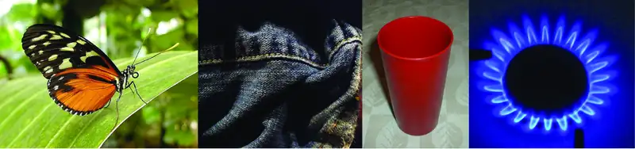
All living things on earth are formed mostly of carbon compounds. The prevalence of carbon compounds in living things has led to the epithet “carbon-based” life. The truth is we know of no other kind of life. Early chemists regarded substances isolated from organisms (plants and animals) as a different type of matter that could not be synthesized artificially, and these substances were thus known as organic compounds. The widespread belief called vitalism held that organic compounds were formed by a vital force present only in living organisms. The German chemist Friedrich Wohler was one of the early chemists to refute this aspect of vitalism, when, in 1828, he reported the synthesis of urea, a component of many body fluids, from nonliving materials. Since then, it has been recognized that organic molecules obey the same natural laws as inorganic substances, and the category of organic compounds has evolved to include both natural and synthetic compounds that contain carbon. Some carbon-containing compounds are not classified as organic, for example, carbonates and cyanides, and simple oxides, such as CO and CO2. Although a single, precise definition has yet to be identified by the chemistry community, most agree that a defining trait of organic molecules is the presence of carbon as the principal element, bonded to hydrogen and other carbon atoms.
Today, organic compounds are key components of plastics, soaps, perfumes, sweeteners, fabrics, pharmaceuticals, and many other substances that we use every day. The value to us of organic compounds ensures that organic chemistry is an important discipline within the general field of chemistry. In this chapter, we discuss why the element carbon gives rise to a vast number and variety of compounds, how those compounds are classified, and the role of organic compounds in representative biological and industrial settings.
20.1 Hydrocarbons¶
Learning Objectives
By the end of this section, you will be able to:
- Explain the importance of hydrocarbons and the reason for their diversity
- Name saturated and unsaturated hydrocarbons, and molecules derived from them
- Describe the reactions characteristic of saturated and unsaturated hydrocarbons
- Identify structural and geometric isomers of hydrocarbons
The largest database1 of organic compounds lists about 10 million substances, which include compounds originating from living organisms and those synthesized by chemists. The number of potential organic compounds has been estimated2 at 1060—an astronomically high number. The existence of so many organic molecules is a consequence of the ability of carbon atoms to form up to four strong bonds to other carbon atoms, resulting in chains and rings of many different sizes, shapes, and complexities.
The simplest organic compounds contain only the elements carbon and hydrogen, and are called hydrocarbons. Even though they are composed of only two types of atoms, there is a wide variety of hydrocarbons because they may consist of varying lengths of chains, branched chains, and rings of carbon atoms, or combinations of these structures. In addition, hydrocarbons may differ in the types of carbon-carbon bonds present in their molecules. Many hydrocarbons are found in plants, animals, and their fossils; other hydrocarbons have been prepared in the laboratory. We use hydrocarbons every day, mainly as fuels, such as natural gas, acetylene, propane, butane, and the principal components of gasoline, diesel fuel, and heating oil. The familiar plastics polyethylene, polypropylene, and polystyrene are also hydrocarbons. We can distinguish several types of hydrocarbons by differences in the bonding between carbon atoms. This leads to differences in geometries and in the hybridization of the carbon orbitals.
Alkanes¶
Alkanes, or saturated hydrocarbons, contain only single covalent bonds between carbon atoms. Each of the carbon atoms in an alkane has sp3 hybrid orbitals and is bonded to four other atoms, each of which is either carbon or hydrogen. The Lewis structures and models of methane, ethane, and pentane are illustrated in Figure 20.2. Carbon chains are usually drawn as straight lines in Lewis structures, but one has to remember that Lewis structures are not intended to indicate the geometry of molecules. Notice that the carbon atoms in the structural models (the ball-and-stick and space-filling models) of the pentane molecule do not lie in a straight line. Because of the sp3 hybridization, the bond angles in carbon chains are close to 109.5°, giving such chains in an alkane a zigzag shape.
The structures of alkanes and other organic molecules may also be represented in a less detailed manner by condensed structural formulas (or simply, condensed formulas). Instead of the usual format for chemical formulas in which each element symbol appears just once, a condensed formula is written to suggest the bonding in the molecule. These formulas have the appearance of a Lewis structure from which most or all of the bond symbols have been removed. Condensed structural formulas for ethane and pentane are shown at the bottom of Figure 20.2, and several additional examples are provided in the exercises at the end of this chapter.
![The figure illustrates four ways to represent molecules for molecules of methane, ethane, and pentane. In the first row of the figure, Lewis structural formulas show element symbols and bonds between atoms. Methane has a central C atom with four H atoms bonded to it. Ethane has a C atom with three H atoms bonded to it. The C atom is also bonded to another C atom with three H atoms bonded to it. Pentane has a C atom with three H atoms bonded to it. The C atom is bonded to another C atom with two H atoms bonded to it. The C atom is bonded to another C atom with two H atoms bonded to it. The C atom is bonded to another C atom with two H atoms bonded to it. The C atom is bonded to another C atom with three H atoms bonded to it. In the second row, ball-and-stick models are shown. In these representations, bonds are represented with sticks, and elements are represented with balls. Carbon atoms are black and hydrogen atoms are white in this image. In the third row, space-filling models are shown. In these models, atoms are enlarged and pushed together, without sticks to represent bonds. The molecule names and structural formulas are provided in the fourth row. Methane is named and represented with a condensed structural formula as C H subscript 4. Ethane is named and represented with two structural formulas C H subscript 3 C H subscript 3 and C subscript 2 H subscript 6. Pentane is named and represented as both C H subscript 3 C H subscript 2 C H subscript 2 C H subscript 2 C H subscript 3 and C subscript 5 H subscript 12.](img/cnx-chem-20-01-alkanes.webp)
A common method used by organic chemists to simplify the drawings of larger molecules is to use a skeletal structure (also called a line-angle structure). In this type of structure, carbon atoms are not symbolized with a C, but represented by each end of a line or bend in a line. Hydrogen atoms are not drawn if they are attached to a carbon. Other atoms besides carbon and hydrogen are represented by their elemental symbols. Figure 20.3 shows three different ways to draw the same structure.
![In this figure, a hydrocarbon molecule is shown in three ways. First, an expanded formula shows all individual carbon atoms, hydrogen atoms, and bonds in a branched hydrocarbon molecule. An initial C atom is bonded to three H atoms. The C atom is bonded to another C atom in the chain. This second C atom is bonded to one H atom and another C atom above the chain. The C atom bonded above the second C atom in the chain is bonded to three H atoms. The second C atom in the chain is bonded to a third C atom in the chain. This third C atom is bonded to on H atom and another C atom below the chain. This C atom is bonded to two H atoms and another C atom below the chain. This second C atom below the chain is bonded to three H atoms. The third C atom in the chain is bonded to a fourth C atom in the chain. The fourth C atom is bonded to two H atoms and a fifth C atom. The fifth C atom is bonded to two H atoms and a sixth C atom. The sixth C atom is bonded to three H atoms. Second, a condensed formula shows each carbon atom of the molecule in clusters with the hydrogen atoms bonded to it, leaving C H, C H subscript 2, and C H subscript 3 groups with bonds between them. The structure shows a C H subscript 3 group bonded to a C H group. The C H group is bonded above to a C H subscript 3 group. The C H group is also bonded to another C H group. This C H group is bonded to a C H subscript 2 group below and a C H subscript 3 group below that. This C H group is also bonded to a C H subscript 2 group which is bonded to another C H subscript 2 group. This C H subscript 2 group is bonded to a final C H subscript 2 group. The final structure in the figure is a skeletal structure which includes only line segments arranged to indicate the structure of the molecule.](img/cnx-chem-20-01-linestruct1.webp)
Example 20.1 Drawing Skeletal Structures
Draw the skeletal structures for these two molecules:
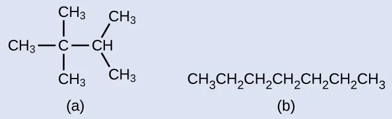
Solution
Each carbon atom is converted into the end of a line or the place where lines intersect. All hydrogen atoms attached to the carbon atoms are left out of the structure (although we still need to recognize they are there):
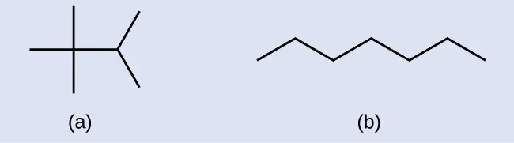
Check Your Learning
Draw the skeletal structures for these two molecules:
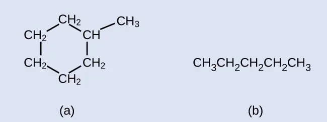
Answer:
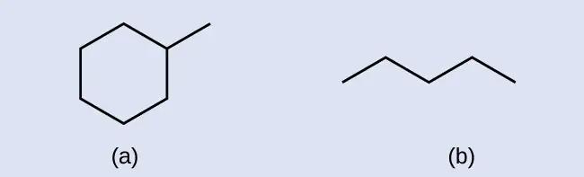
Example 20.2 Interpreting Skeletal Structures
Identify the chemical formula of the molecule represented here:
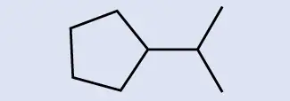
Solution
There are eight places where lines intersect or end, meaning that there are eight carbon atoms in the molecule. Since we know that carbon atoms tend to make four bonds, each carbon atom will have the number of hydrogen atoms that are required for four bonds. This compound contains 16 hydrogen atoms for a molecular formula of C8H16.
Location of the hydrogen atoms:
Check Your Learning
Identify the chemical formula of the molecule represented here:
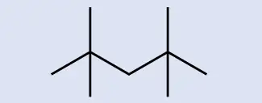
Answer:
C9H20
All alkanes are composed of carbon and hydrogen atoms, and have similar bonds, structures, and formulas; noncyclic alkanes all have a formula of CnH2n+2. The number of carbon atoms present in an alkane has no limit. Greater numbers of atoms in the molecules will lead to stronger intermolecular attractions (dispersion forces) and correspondingly different physical properties of the molecules. Properties such as melting point and boiling point (Table 20.1) usually change smoothly and predictably as the number of carbon and hydrogen atoms in the molecules change.
Table 20.1
| Properties of Some Alkanes3 | |||||
|---|---|---|---|---|---|
| Alkane | Molecular Formula | Melting Point (°C) | Boiling Point (°C) | Phase at STP4 | Number of Structural Isomers |
| methane | CH4 | –182.5 | –161.5 | gas | 1 |
| ethane | C2H6 | –183.3 | –88.6 | gas | 1 |
| propane | C3H8 | –187.7 | –42.1 | gas | 1 |
| butane | C4H10 | –138.3 | –0.5 | gas | 2 |
| pentane | C5H12 | –129.7 | 36.1 | liquid | 3 |
| hexane | C6H14 | –95.3 | 68.7 | liquid | 5 |
| heptane | C7H16 | –90.6 | 98.4 | liquid | 9 |
| octane | C8H18 | –56.8 | 125.7 | liquid | 18 |
| nonane | C9H20 | –53.6 | 150.8 | liquid | 35 |
| decane | C10H22 | –29.7 | 174.0 | liquid | 75 |
| tetradecane | C14H30 | 5.9 | 253.5 | solid | 1858 |
| octadecane | C18H38 | 28.2 | 316.1 | solid | 60,523 |
Hydrocarbons with the same formula, including alkanes, can have different structures. For example, two alkanes have the formula C4H10: They are called n-butane and 2-methylpropane (or isobutane), and have the following Lewis structures:
![The figure illustrates three ways to represent molecules of n dash butane and 2 dash methlylpropane. In the first row of the figure, Lewis structural formulas show element symbols and bonds between atoms. The n dash butane molecule shows 4 carbon atoms represented by the letter C bonded in a straight horizontal chain with hydrogen atoms represented by the letter H bonded above and below all carbon atoms. H atoms are bonded at the ends to the left and right of the left-most and right-most C atoms. In the second row, ball-and-stick models are shown. In these representations, bonds are represented with sticks, and elements are represented with balls. Carbon atoms are black and hydrogen atoms are white in this image. In the third row, space-filling models are shown. In these models, atoms are enlarged and pushed together, without sticks to represent bonds. The molecule names are provided in the fourth row.](img/cnx-chem-20-01-butaneisom-img.webp)
The compounds n-butane and 2-methylpropane are structural isomers (the term constitutional isomers is also commonly used). Constitutional isomers have the same molecular formula but different spatial arrangements of the atoms in their molecules. The n-butane molecule contains an unbranched chain, meaning that no carbon atom is bonded to more than two other carbon atoms. We use the term normal, or the prefix n, to refer to a chain of carbon atoms without branching. The compound 2–methylpropane has a branched chain (the carbon atom in the center of the Lewis structure is bonded to three other carbon atoms)
Identifying isomers from Lewis structures is not as easy as it looks. Lewis structures that look different may actually represent the same isomers. For example, the three structures in Figure 20.4 all represent the same molecule, n-butane, and hence are not different isomers. They are identical because each contains an unbranched chain of four carbon atoms.
![The figure illustrates three ways to represent molecules of n dash butane. In the first row of the figure, Lewis structural formulas show carbon and hydrogen element symbols and bonds between the atoms. The first structure in this row shows three of the linked C atoms in a horizontal row with a single C atom bonded above the left-most carbon. The left-most C atom has two H atoms bonded to it. The C atom bonded above the left-most C atom has three H atoms bonded to it. The C atom bonded to the right of the left-most C atom has two H atoms bonded to it. The right-most C atom has three H atoms bonded to it. The C atoms and the bonds connecting all the C atoms are red. The second structure in the row similarly shows the row of three linked C atoms with a single C atom bonded below the C atom to the left. The left-most C atom has two H atoms bonded to it. The C atom bonded below the left-most C atom has three H atoms bonded to it. The C atom bonded to the right of the left-most C atom has two H atoms bonded to it. The right-most atom has three H atoms bonded to it. All the C atoms and the bonds between them are red. The third structure has two C atoms bonded in a row with a third C atom bonded above the left C atom and the fourth C atom bonded below the right C atom. The C atom bonded above the left C atom has three H atoms bonded to it. The left C atom has two H atoms bonded to it. The right C atom has two H atoms bonded to it. The C atom bonded below the right C atom has three H atoms bonded to it. All the C atoms and the bonds between them are red. In the second row, ball-and-stick models for the structures are shown. In these representations, bonds are represented with sticks, and elements are represented with balls. Carbon atoms are black and hydrogen atoms are white in this image. In the third row, space-filling models are shown. In these models, atoms are enlarged and pushed together, without sticks to represent bonds.](img/cnx-chem-20-01-butane-img.webp)
The Basics of Organic Nomenclature: Naming Alkanes¶
The International Union of Pure and Applied Chemistry (IUPAC) has devised a system of nomenclature that begins with the names of the alkanes and can be adjusted from there to account for more complicated structures. The nomenclature for alkanes is based on two rules:
- To name an alkane, first identify the longest chain of carbon atoms in its structure. A two-carbon chain is called ethane; a three-carbon chain, propane; and a four-carbon chain, butane. Longer chains are named as follows: pentane (five-carbon chain), hexane (6), heptane (7), octane (8), nonane (9), and decane (10). These prefixes can be seen in the names of the alkanes described in Table 20.1.
- Add prefixes to the name of the longest chain to indicate the positions and names of substituents. Substituents are branches or functional groups that replace hydrogen atoms on a chain. The position of a substituent or branch is identified by the number of the carbon atom it is bonded to in the chain. We number the carbon atoms in the chain by counting from the end of the chain nearest the substituents. Multiple substituents are named individually and placed in alphabetical order at the front of the name.
![This figure shows structural formulas for propane, 2 dash chloropropane, 2 dash methylpropane, 2 comma 4 dash difluorohexane, and 1 dash bromo dash 3 dash chlorohexane. In each of the structures, the carbon atoms are in a row with bonded halogen atoms and a methyl group bonded below the figures. Propane is listed as simply C H subscript 3 C H subscript 2 C H subscript 3, with the numbers 1, 2, and 3 appearing above the carbon atoms from left to right. 2 dash chloropropane similarly shows C H subscript 3 C H C H subscript 3, with the numbers 1, 2, and 3 appearing above the carbon atoms from left to right. A C l atom is bonded below carbon 2. The C l atom is red. 2 dash methylpropane similarly shows C H subscript 3 C H C H subscript 3, with the numbers 3, 2, and 1 appearing above the carbon atoms from left to right. A C H subscript 3 group is bonded beneath carbon 2 and is red. 2 comma 4 dash difluorohexane similarly shows C H subscript 3 C H subscript 2 C H C H subscript 2 C H C H subscript 3, with the numbers 6, 5, 4, 3, 2, and 1 appearing above the carbon atoms from left to right. F atoms are bonded to carbons 4 and 2 at the bottom of the structure and are red. 1 dash bromo dash 3 dash chlorohexane similarly shows C H subscript 2 C H subscript 2 C H C H subscript 2 C H subscript 2 C H subscript 3, with numbers 1, 2, 3, 4, 5, and 6 appearing above the carbon atoms from left to right. B r is bonded below carbon 1 and C l is bonded below carbon 3. Both B r and C l are red.](img/cnx-chem-20-01-substitu-img.webp)
When more than one substituent is present, either on the same carbon atom or on different carbon atoms, the substituents are listed alphabetically. Because the carbon atom numbering begins at the end closest to a substituent, the longest chain of carbon atoms is numbered in such a way as to produce the lowest number for the substituents. The ending -o replaces -ide at the end of the name of an electronegative substituent (in ionic compounds, the negatively charged ion ends with -ide like chloride; in organic compounds, such atoms are treated as substituents and the -o ending is used). The number of substituents of the same type is indicated by the prefixes di- (two), tri- (three), tetra- (four), and so on (for example, difluoro- indicates two fluoride substituents).
Example 20.3 Naming Halogen-substituted Alkanes
Name the molecule whose structure is shown here:
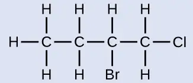
Solution
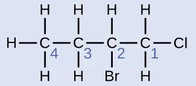
The four-carbon chain is numbered from the end with the chlorine atom. This puts the substituents on positions 1 and 2 (numbering from the other end would put the substituents on positions 3 and 4). Four carbon atoms means that the base name of this compound will be butane. The bromine at position 2 will be described by adding 2-bromo-; this will come at the beginning of the name, since bromo- comes before chloro- alphabetically. The chlorine at position 1 will be described by adding 1-chloro-, resulting in the name of the molecule being 2-bromo-1-chlorobutane.
Check Your Learning
Name the following molecule:
Answer:
3,3-dibromo-2-iodopentane
We call a substituent that contains one less hydrogen than the corresponding alkane an alkyl group. The name of an alkyl group is obtained by dropping the suffix -ane of the alkane name and adding -yl:
![In this figure, methane is named and represented as C with four H atoms bonded above, below, to the left, and to the right of the C. The methyl group is shown, which appears like methane without the right most H. A dash remains at the location where the H was formerly bonded. Ethane is named and represented with two centrally bonded C atoms to which six H atoms are bonded; two above and below each of the two C atoms and to the left and right ends of the linked C atoms. The ethyl group appears as a similar structure with the right-most H atom removed. A dash remains at the location where the H atom was formerly bonded.](img/cnx-chem-20-01-alkyl-img.webp)
The open bonds in the methyl and ethyl groups indicate that these alkyl groups are bonded to another atom.
Example 20.4 Naming Substituted Alkanes
Name the molecule whose structure is shown here:
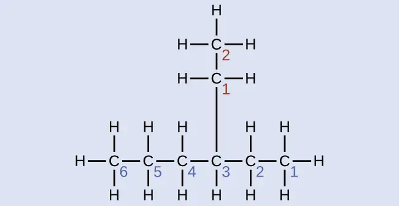
Solution
The longest carbon chain runs horizontally across the page and contains six carbon atoms (this makes the base of the name hexane, but we will also need to incorporate the name of the branch). In this case, we want to number from right to left (as shown by the blue numbers) so the branch is connected to carbon 3 (imagine the numbers from left to right—this would put the branch on carbon 4, violating our rules). The branch attached to position 3 of our chain contains two carbon atoms (numbered in red)—so we take our name for two carbons eth- and attach -yl at the end to signify we are describing a branch. Putting all the pieces together, this molecule is 3-ethylhexane.
Check Your Learning
Name the following molecule:
![This figure shows a C atom bonded to three H atoms and another C atom. This C atom is bonded to two H atoms and third C atom. The third C atom is bonded to two H atoms and a fourth C atom. The fourth C atom is bonded to two H atoms and a fifth C atom. This C atom is bonded to an H atom, a sixth C atom in the chain, and another C atom which appears to branch off the chain. The C atom in the branch is bonded to two H atoms and another C atom. This C atom is bonded to two H atoms and another C atom. This third C atom appears to the left of the second and is bonded to three H atoms. The sixth C atom in the chain is bonded to two H atoms and a seventh C atom. The seventh C atom is bonded to two H atoms and an eighth C atom. The eighth C atom is bonded to three H atoms.](img/cnx-chem-20-01-octane2-img.webp)
Answer:
4-propyloctane
Some hydrocarbons can form more than one type of alkyl group when the hydrogen atoms that would be removed have different “environments” in the molecule. This diversity of possible alkyl groups can be identified in the following way: The four hydrogen atoms in a methane molecule are equivalent; they all have the same environment. They are equivalent because each is bonded to a carbon atom (the same carbon atom) that is bonded to three hydrogen atoms. (It may be easier to see the equivalency in the ball and stick models in Figure 20.2. Removal of any one of the four hydrogen atoms from methane forms a methyl group. Likewise, the six hydrogen atoms in ethane are equivalent (Figure 20.2) and removing any one of these hydrogen atoms produces an ethyl group. Each of the six hydrogen atoms is bonded to a carbon atom that is bonded to two other hydrogen atoms and a carbon atom. However, in both propane and 2–methylpropane, there are hydrogen atoms in two different environments, distinguished by the adjacent atoms or groups of atoms:
![In this figure, propane is shown as a chain of three bonded C atoms. Eight H atoms are shown with three bonded to the first C atom, two to the middle C atom, and three to the third C atom. The H atoms bonded to the middle C atom are purple. 2 dash methylpropane is also shown, which similarly has a chain of three bonded C atoms. In this structure, A C atom is bonded beneath the middle C atom of the chain. Ten H atoms are shown with three bonded to the first C atom, one to the middle C atom, three to the third C atom, and three to the C atom also bonded to the middle C atom. The H atom bonded to the middle C atom is green.](img/cnx-chem-20-01-propane-img.webp)
Each of the six equivalent hydrogen atoms of the first type in propane and each of the nine equivalent hydrogen atoms of that type in 2-methylpropane (all shown in black) are bonded to a carbon atom that is bonded to only one other carbon atom. The two purple hydrogen atoms in propane are of a second type. They differ from the six hydrogen atoms of the first type in that they are bonded to a carbon atom bonded to two other carbon atoms. The green hydrogen atom in 2-methylpropane differs from the other nine hydrogen atoms in that molecule and from the purple hydrogen atoms in propane. The green hydrogen atom in 2-methylpropane is bonded to a carbon atom bonded to three other carbon atoms. Two different alkyl groups can be formed from each of these molecules, depending on which hydrogen atom is removed. The names and structures of these and several other alkyl groups are listed in Figure 20.5.
![This table provides a listing of alkyl groups and corresponding structures. Methyl is shown as C H subscript 3 followed by a dash. Ethyl is shown as C H subscript 3 C H subscript 2 followed by a dash. n dash propyl is shown as C H subscript 3 C H subscript 2 C H subscript 2 followed by a dash. Isopropyl is shown as C H subscript 3 C H C H subscript 3 with a dash extending upward from the middle C. n dash butyl is shown as C H subscript 3 C H subscript 2 C H subscript 2 C H subscript 2 followed by a dash. sec dash butyl is shown as C H subscript 3 C H subscript 2 C H C H subscript 3 with a dash extending upward from the third C counting left to right. Isobutyl is shown as C H subscript 3 C H C H subscript 2 with a dash extending to the right. There is a C H subscript 3 bonded to the middle C. tert dash butyl is shown as C H subscript 3 C C H subscript 3 with a C H subscript 3 group bonded below the middle C and a dash extending upward from the central C.](img/cnx-chem-20-01-alkyls.webp)
Note that alkyl groups do not exist as stable independent entities. They are always a part of some larger molecule. The location of an alkyl group on a hydrocarbon chain is indicated in the same way as any other substituent:
![This figure shows structures of 3 dash ethylheptane, 2 comma 2 comma 4 dash trimethylpentane, and 4 dash isopropylheptane. The 3 dash ethylheptane structure shows C H subscript 3 C H subscript 2 C H subscript 2 C H subscript 2 C H C H subscript 2 C H subscript 3. Under the C atom labeled 3, is a bond to C H subscript 2 C H subscript 3 which appears in red. The C atoms are labeled 7, 6, 5, 4, 3, 2, and 1 from left to right. The 2 comma 2 comma 4 dash trimethylpentane structure shows C H subscript 3 C bonded to C H subscript 2 C H C H subscript 3. The C atoms are labeled 1, 2, 3, 4, and 5 from left to right. The C atom labeled 2 has a C H subscript 3 bonded above it and below it. The C H subscript 3 groups both appear in red. The C atom labeled 4 has a bond above it to C H subscript 3. The C H subscript 3 group appears in red. The 4 dash isopropylheptane structure shows C H subscript 3 C H subscript 2 C H subscript 2 C H C H subscript 2 C H subscript 2 C H subscript 3. From the fourth C counting from left to right, there is a C H group bonded above. Bonded up and to the right and and up to the left of this C H group are C H subscript 3 groups.](img/cnx-chem-20-01-alklnm-img.webp)
Alkanes are relatively stable molecules, but heat or light will activate reactions that involve the breaking of C–H or C–C single bonds. Combustion is one such reaction:
Alkanes burn in the presence of oxygen, a highly exothermic oxidation-reduction reaction that produces carbon dioxide and water. As a consequence, alkanes are excellent fuels. For example, methane, CH4, is the principal component of natural gas. Butane, C4H10, used in camping stoves and lighters is an alkane. Gasoline is a liquid mixture of continuous- and branched-chain alkanes, each containing from five to nine carbon atoms, plus various additives to improve its performance as a fuel. Kerosene, diesel oil, and fuel oil are primarily mixtures of alkanes with higher molecular masses. The main source of these liquid alkane fuels is crude oil, a complex mixture that is separated by fractional distillation. Fractional distillation takes advantage of differences in the boiling points of the components of the mixture (see Figure 20.6). You may recall that boiling point is a function of intermolecular interactions, which was discussed in the chapter on solutions and colloids.
![This figure contains a photo of a refinery, showing large columnar structures. A diagram of a fractional distillation column is also shown. Near the bottom of the column, an arrow pointing into the column from the left shows a point of entry for heated crude oil. The column contains several layers at which different components are removed. At the very bottom, residue materials are removed through a pipe as indicated by an arrow out of the column. At each successive level, different materials are removed through pipes proceeding from the bottom to the top of the column. In order from bottom to top, these materials are fuel oil, followed by diesel oil, kerosene, naptha, gasoline, and refinery gas at the very top. To the right of the column diagram, a double sided arrow is shown that is blue at the top and gradually changes color to red moving downward. The blue top of the arrow is labeled, “Small molecules: low boiling point, very volatile, flows easily, ignites easily.” The red bottom of the arrow is labeled, “Large molecules: high boiling point, not very volatile, does not flow easily, does not ignite easily.”](img/cnx-chem-20-01-fracdistil.webp)
In a substitution reaction, another typical reaction of alkanes, one or more of the alkane’s hydrogen atoms is replaced with a different atom or group of atoms. No carbon-carbon bonds are broken in these reactions, and the hybridization of the carbon atoms does not change. For example, the reaction between ethane and molecular chlorine depicted here is a substitution reaction:
![This diagram illustrates the reaction of ethane and C l subscript 2 to form chloroethane. In this reaction, the structural formula of ethane is shown with two C atoms bonded together and three H atoms bonded to each C atom. The H atom on the far right is red. Ethane is added to C l bonded to C l, followed by an arrow that points right. The arrow is labeled, “Heat or light.” To the right, the chloroethane molecule is shown with two C atoms bonded together. The left C atom has three H atoms bonded to it, but the right C atom has two H atoms bonded above and below it along with a C l atom. The C l atom appears in red with 3 pairs of electron dots at the right end of the molecule. This is followed by a plus sign, which in turn is followed in red by H bonded to C l. Three pairs of electron dots are present above, to the right, and below the C l.](img/cnx-chem-20-01-ethylchlor-img.webp)
The C–Cl portion of the chloroethane molecule is an example of a functional group, the part or moiety of a molecule that imparts a specific chemical reactivity. The types of functional groups present in an organic molecule are major determinants of its chemical properties and are used as a means of classifying organic compounds as detailed in the remaining sections of this chapter.
Link to Learning
Want more practice naming alkanes? Watch this brief video tutorial to review the nomenclature process.
Alkenes¶
Organic compounds that contain one or more double or triple bonds between carbon atoms are described as unsaturated. You have likely heard of unsaturated fats. These are complex organic molecules with long chains of carbon atoms, which contain at least one double bond between carbon atoms. Unsaturated hydrocarbon molecules that contain one or more double bonds are called alkenes. Carbon atoms linked by a double bond are bound together by two bonds, one σ bond and one π bond. Double and triple bonds give rise to a different geometry around the carbon atom that participates in them, leading to important differences in molecular shape and properties. The differing geometries are responsible for the different properties of unsaturated versus saturated fats.
Ethene, C2H4, is the simplest alkene. Each carbon atom in ethene, commonly called ethylene, has a trigonal planar structure. The second member of the series is propene (propylene) (Figure 20.7); the butene isomers follow in the series. Four carbon atoms in the chain of butene allows for the formation of isomers based on the position of the double bond, as well as a new form of isomerism.
![Lewis structural formulas show carbon and hydrogen element symbols and bonds between the atoms. The first structure in this row shows two bonded C atoms with a double bond between them. Each C atom has two H atoms bonded to it as well. The second structure in the row shows three bonded C atoms with a double bond up and to the right between the first and second C atoms moving left to right across the chain, and a single bond down and to the right between the second and third C atom. The first C atom has two H atoms bonded to it, the second C atom has one H atom bonded to it, and the third C atom has three H atoms bonded to it. The third structure shows four bonded C atoms with one bonded up and to the right to a C atom, down and to the right to a C atom, and double bonded up and to the right to a C atom. The first C atom, moving from left to right, has three H atoms bonded to it. The second C atom has two H atoms bonded to it. The third C atom has one H atom bonded to it, and the fourth C atom has two H atoms bonded to it. In the second row, ball-and-stick models for the structures are shown. In these representations, single bonds are represented with sticks, double bonds are represented with two parallel sticks, and elements are represented with balls. Carbon atoms are black and hydrogen atoms are white in this image. In the third row, space-filling models are shown. In these models, atoms are enlarged and pushed together, without sticks to represent bonds. In the final row, names are provided. The molecule with the double bond between two C atoms is named ethene. The molecule with the double bond between the first and second C atoms in the chain of three is named propene. The molecule with the double bond between the carbon atoms in the chain of four is named 1 dash butene.](img/cnx-chem-20-01-propene1.webp)
Ethylene (the common industrial name for ethene) is a basic raw material in the production of polyethylene and other important compounds. Over 135 million tons of ethylene were produced worldwide in 2010 for use in the polymer, petrochemical, and plastic industries. Ethylene is produced industrially in a process called cracking, in which the long hydrocarbon chains in a petroleum mixture are broken into smaller molecules.
Chemistry in Everyday Life: Recycling Plastics
Polymers (from Greek words poly meaning “many” and mer meaning “parts”) are large molecules made up of repeating units, referred to as monomers. Polymers can be natural (starch is a polymer of sugar residues and proteins are polymers of amino acids) or synthetic [like polyethylene, polyvinyl chloride (PVC), and polystyrene]. The variety of structures of polymers translates into a broad range of properties and uses that make them integral parts of our everyday lives. Adding functional groups to the structure of a polymer can result in significantly different properties (see the discussion about Kevlar later in this chapter).
An example of a polymerization reaction is shown in Figure 20.8. The monomer ethylene (C2H4) is a gas at room temperature, but when polymerized, using a transition metal catalyst, it is transformed into a solid material made up of long chains of –CH2– units called polyethylene. Polyethylene is a commodity plastic used primarily for packaging (bags and films).
![This diagram has three rows, showing ethylene reacting to form polyethylene. In the first row, Lewis structural formulas show three molecules of ethylene being added together, which are each composed of two doubly bonded C atoms, each with two bonded H atoms. Ellipses, or three dots, are present before and after the molecule structures, which in turn are followed by an arrow pointing right. On the right side of the arrow, the ellipses or dots again appear to the left of a dash that connects to a chain of 7 C atoms, each with H atoms connected above and below. A dash appears at the end of the chain, which in turn is followed by ellipses or dots. The reaction diagram is repeated in the second row using ball-and-stick models for the structures. In these representations, single bonds are represented with sticks, double bonds are represented with two parallel sticks, and elements are represented with balls. Carbon atoms are black and hydrogen atoms are white in this image. In the third row, space-filling models are shown. In these models, atoms are enlarged spheres which are pushed together, without sticks to represent bonds.](img/cnx-chem-20-01-monomer.webp)
Polyethylene is a member of one subset of synthetic polymers classified as plastics. Plastics are synthetic organic solids that can be molded; they are typically organic polymers with high molecular masses. Most of the monomers that go into common plastics (ethylene, propylene, vinyl chloride, styrene, and ethylene terephthalate) are derived from petrochemicals and are not very biodegradable, making them candidate materials for recycling. Recycling plastics helps minimize the need for using more of the petrochemical supplies and also minimizes the environmental damage caused by throwing away these nonbiodegradable materials.
Plastic recycling is the process of recovering waste, scrap, or used plastics, and reprocessing the material into useful products. For example, polyethylene terephthalate (soft drink bottles) can be melted down and used for plastic furniture, in carpets, or for other applications. Other plastics, like polyethylene (bags) and polypropylene (cups, plastic food containers), can be recycled or reprocessed to be used again. Many areas of the country have recycling programs that focus on one or more of the commodity plastics that have been assigned a recycling code (see Figure 20.9). These operations have been in effect since the 1970s and have made the production of some plastics among the most efficient industrial operations today.
![This table shows recycling symbols, names, and uses of various types of plastics. Symbols are shown with three arrows in a triangular shape surrounding a number. Number 1 is labeled P E T E. The related plastic, polyethylene terephthalate (P E T E), is used in soda bottles and oven-ready food trays. Number 2 is labeled H D P E. The related plastic is high-density polyethylene (H D P E), which is used in bottles for milk and dishwashing liquids. Number 3 is labeled V. The related plastic is polyvinyl chloride or (P V C). This plastic is used in food trays, plastic wrap, and bottles for mineral water and shampoo. Number 4 is labeled L D P E. This plastic is low density polyethylene (L D P E). It is used in shopping bags and garbage bags. Number 5 is labeled P P. The related plastic is polypropylene (P P). It is used in margarine tubs and microwaveable food trays. Number 6 is labeled P S. The related plastic is polystyrene (P S). It is used in yogurt tubs, foam meat trays, egg cartons, vending cups, plastic cutlery, and packaging for electronics and toys. Number 7 is labeled other for any other plastics. Items in this category include those plastic materials that do not fit any other category. Melamine used in plastic plates and cups is an example.](img/cnx-chem-20-01-recycle.webp)
The name of an alkene is derived from the name of the alkane with the same number of carbon atoms. The presence of the double bond is signified by replacing the suffix -ane with the suffix -ene. The location of the double bond is identified by naming the smaller of the numbers of the carbon atoms participating in the double bond:
![Four structural formulas and names are shown. The first shows two red C atoms connected by a red double bond illustrated with two parallel line segments. H atoms are bonded above and below to the left of the left-most C atom. Two more H atoms are similarly bonded to the right of the C atom on the right. Beneath this structure the name ethene and alternate name ethylene are shown. The second shows three C atoms bonded together with a red double bond between the red first and second C atoms moving left to right across the three-carbon chain. H atoms are bonded above and below to the left of the C atom to the left. A single H is bonded above the middle C atom. Three more H atoms are bonded above, below, and to the right of the third C atom. Beneath this structure the name propene and alternate name propylene is shown. The third shows four C atoms bonded together, numbered one through four moving left to right with a red double bond between the red first and second carbon in the chain. H atoms are bonded above and below to the left of the C atom to the left. A single H is bonded above the second C atom. H atoms are bonded above and below the third C atom. Three more H atoms are bonded above, below, and to the right of the fourth C atom. Beneath this structure the name 1 dash butene is shown. The fourth shows four C atoms bonded together, numbered one through four moving left to right with a red double bond between the red second and third C atoms in the chain. H atoms are bonded above, below, and to the left of the left-most C atom. A single H atom is bonded above the second C atom. A single H atom is bonded above the third C atom. Three more H atoms are bonded above, below, and to the right of the fourth C atom. Beneath this structure the name 2 dash butene is shown.](img/cnx-chem-20-01-alkenes-img.webp)
Isomers of Alkenes¶
Molecules of 1-butene and 2-butene are structural isomers; the arrangement of the atoms in these two molecules differs. As an example of arrangement differences, the first carbon atom in 1-butene is bonded to two hydrogen atoms; the first carbon atom in 2-butene is bonded to three hydrogen atoms.
The compound 2-butene and some other alkenes also form a second type of isomer called a geometric isomer. In a set of geometric isomers, the same types of atoms are attached to each other in the same order, but the geometries of the two molecules differ. Geometric isomers of alkenes differ in the orientation of the groups on either side of a \(\text{C}=\text{C}\) bond.
Carbon atoms are free to rotate around a single bond but not around a double bond; a double bond is rigid. This makes it possible to have two isomers of 2-butene, one with both methyl groups on the same side of the double bond and one with the methyl groups on opposite sides. When structures of butene are drawn with 120° bond angles around the sp2-hybridized carbon atoms participating in the double bond, the isomers are apparent. The 2-butene isomer in which the two methyl groups are on the same side is called a cis-isomer; the one in which the two methyl groups are on opposite sides is called a trans-isomer (Figure 20.10). The different geometries produce different physical properties, such as boiling point, that may make separation of the isomers possible:
![The figure illustrates three ways to represent isomers of butene. In the first row of the figure, Lewis structural formulas show carbon and hydrogen element symbols and bonds between the atoms. The first structure in this row shows a C atom with a double bond to another C atom which is bonded down and to the right to C H subscript 2 which, in turn, is bonded to C H subscript 3. The first C atom, moving from left to right, has two H atoms bonded to it and the second C atom has one H atom bonded to it. The second structure in the row shows a C atom with a double bond to another C atom. The first C atom is bonded to an H atom up and to the left and C H subscript 3 down and to the left. The second C atom is bonded to an H atom up and to the right and C H subscript 3 down and to the right. Both C H subscript 3 structures appear in red. The third structure shows a C atom with a double bond to another C atom. The first C atom from the left is bonded up to a the left to C H subscript 3 which appears and red. It is also bonded down and to the left to an H atom. The second C atom is bonded up and to the right to an H atom and down and to the left to C H subscript 3 which appears in red. In the second row, ball-and-stick models for the structures are shown. In these representations, single bonds are represented with sticks, double bonds are represented with two parallel sticks, and elements are represented with balls. C atoms are black and H atoms are white in this image. In the third row, space-filling models are shown. In these models, atoms are enlarged and pushed together, without sticks to represent bonds. In the final row, names are provided. The molecule with the double bond between the first and second carbons is named 1 dash butene. The two molecules with the double bond between the second and third carbon atoms is called 2 dash butene. The first model, which has both C H subscript 3 groups beneath the double bond is called the cis isomer. The second which has the C H subscript 3 groups on opposite sides of the double bond is named the trans isomer.](img/cnx-chem-20-01-geoisomers-img.webp)
Alkenes are much more reactive than alkanes because the \(\text{C}=\text{C}\) moiety is a reactive functional group. A π bond, being a weaker bond, is disrupted much more easily than a σ bond. Thus, alkenes undergo a characteristic reaction in which the π bond is broken and replaced by two σ bonds. This reaction is called an addition reaction. The hybridization of the carbon atoms in the double bond in an alkene changes from sp2 to sp3 during an addition reaction. For example, halogens add to the double bond in an alkene instead of replacing hydrogen, as occurs in an alkane:
![This diagram illustrates the reaction of ethene and C l subscript 2 to form 1 comma 2 dash dichloroethane. In this reaction, the structural formula of ethane is shown. It has a double bond between the two C atoms with two H atoms bonded to each C atom plus C l bonded to C l. This is shown on to the left of an arrow. The two C atoms and the double bond between them are shown in red. To the right of the arrow, the 1 comma 2 dash dichloroethane molecule is shown. It has only single bonds and each C atom has a C l with three pairs of electron dots bonded beneath it. The C and C l atoms, single bond between them, and electron pairs are shown in red. Each C atom also has two H atoms bonded to it.](img/cnx-chem-20-01-halogen-img.webp)
Example 20.5 Alkene Reactivity and Naming
Provide the IUPAC names for the reactant and product of the halogenation reaction shown here:
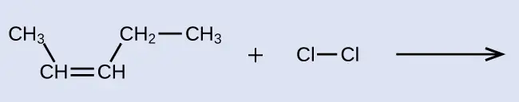
Solution
The reactant is a five-carbon chain that contains a carbon-carbon double bond, so the base name will be pentene. We begin counting at the end of the chain closest to the double bond—in this case, from the left—the double bond spans carbons 2 and 3, so the name becomes 2-pentene. Since there are two carbon-containing groups attached to the two carbon atoms in the double bond—and they are on the same side of the double bond—this molecule is the cis-isomer, making the name of the starting alkene cis-2-pentene. The product of the halogenation reaction will have two chlorine atoms attached to the carbon atoms that were a part of the carbon-carbon double bond:
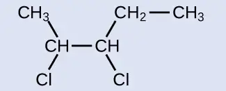
This molecule is now a substituted alkane and will be named as such. The base of the name will be pentane. We will count from the end that numbers the carbon atoms where the chlorine atoms are attached as 2 and 3, making the name of the product 2,3-dichloropentane.
Check Your Learning
Provide names for the reactant and product of the reaction shown:
![This shows a C atom bonded to three H atoms and another C atom. This second C atom is bonded to two H atoms and a third C atom. This third C atom is bonded to one H atom and also forms a double bond with a fourth C atom. This fourth C atom is bonded to one H atom and a fifth C atom. This fifth C atom is bonded to two H atoms and a sixth C atom. This sixth C atom is bonded to three H atoms. There is a plus sign followed by a C l atom bonded to another C l atom. There is a reaction arrow. no products are shown.](img/cnx-chem-20-01-reactprod1-img.webp)
Answer:
reactant: cis-3-hexene product: 3,4-dichlorohexane
Alkynes¶
Hydrocarbon molecules with one or more triple bonds are called alkynes; they make up another series of unsaturated hydrocarbons. Two carbon atoms joined by a triple bond are bound together by one σ bond and two π bonds. The sp-hybridized carbons involved in the triple bond have bond angles of 180°, giving these types of bonds a linear, rod-like shape.
The simplest member of the alkyne series is ethyne, C2H2, commonly called acetylene. The Lewis structure for ethyne, a linear molecule, is:
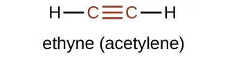
The IUPAC nomenclature for alkynes is similar to that for alkenes except that the suffix -yne is used to indicate a triple bond in the chain. For example, \(\text{CH}_{3}\text{CH}_{2}\text{C}\equiv\text{CH}\) is called 1-butyne.
Example 20.6 Structure of Alkynes
Describe the geometry and hybridization of the carbon atoms in the following molecule:
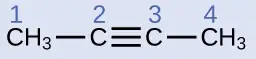
Solution
Carbon atoms 1 and 4 have four single bonds and are thus tetrahedral with sp3 hybridization. Carbon atoms 2 and 3 are involved in the triple bond, so they have linear geometries and would be classified as sp hybrids.
Check Your Learning
Identify the hybridization and bond angles at the carbon atoms in the molecule shown:
Answer:
carbon 1: sp, 180°; carbon 2: sp, 180°; carbon 3: sp2, 120°; carbon 4: sp2, 120°; carbon 5: sp3, 109.5°
Chemically, the alkynes are similar to the alkenes. Since the \(\text{C}\equiv\text{C}\) functional group has two π bonds, alkynes typically react even more readily, and react with twice as much reagent in addition reactions. The reaction of acetylene with bromine is a typical example:
![This diagram illustrates the reaction of ethyne and two molecules of B r subscript 2 to form 1 comma 1 comma 2 comma 2 dash tetrabromoethane. In this reaction, the structural formula of ethyne, an H atom bonded to a red C atom with a red triple bond to another red C atom bonded to a black H atom, plus B r bonded to B r plus B r bonded to B r is shown to the left of an arrow. On the right, the form 1 comma 1 comma 2 comma 2 dash tetrabromoethane molecule is shown. It has an H atom bonded to a C atom which is bonded to another C atom which is bonded to an H atom. Each C atom is bonded above and below to a B r atom. Each B r atom has three pairs of electron dots. The C and B r atoms, single bond between them, and electron pairs are shown in red.](img/cnx-chem-20-01-acetylene-img.webp)
Acetylene and the other alkynes also burn readily. An acetylene torch takes advantage of the high heat of combustion for acetylene.
Aromatic Hydrocarbons¶
Benzene, C6H6, is the simplest member of a large family of hydrocarbons, called aromatic hydrocarbons. These compounds contain ring structures and exhibit bonding that must be described using the resonance hybrid concept of valence bond theory or the delocalization concept of molecular orbital theory. (To review these concepts, refer to the earlier chapters on chemical bonding). The resonance structures for benzene, C6H6, are:
![This structural formula shows a six carbon hydrocarbon ring. On the left side there are six C atoms. The C atom on top and to the left forms a single bond to the C atom on the top and to the right. The C atom has a double bond to another C atom which has a single bond to a C atom. That C atom has a double bond to another C atom which has a single bond to a C atom. That C atom forms a double bond with another C atom. Each C atom has a single bond to an H atom. There is a double sided arrow and the structure on the right is almost identical to the structure on the left. The structure on the right shows double bonds where the structure on the left showed single bonds. The structure on the right shows single bonds where the stucture on the left showed double bonds.](img/cnx-chem-20-01-aromatic-img.webp)
Valence bond theory describes the benzene molecule and other planar aromatic hydrocarbon molecules as hexagonal rings of sp2-hybridized carbon atoms with the unhybridized p orbital of each carbon atom perpendicular to the plane of the ring. Three valence electrons in the sp2 hybrid orbitals of each carbon atom and the valence electron of each hydrogen atom form the framework of σ bonds in the benzene molecule. The fourth valence electron of each carbon atom is shared with an adjacent carbon atom in their unhybridized p orbitals to yield the π bonds. Benzene does not, however, exhibit the characteristics typical of an alkene. Each of the six bonds between its carbon atoms is equivalent and exhibits properties that are intermediate between those of a C–C single bond and a \(\text{C}=\text{C}\) double bond. To represent this unique bonding, structural formulas for benzene and its derivatives are typically drawn with single bonds between the carbon atoms and a circle within the ring as shown in Figure 20.11.
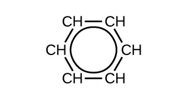
There are many derivatives of benzene. The hydrogen atoms can be replaced by many different substituents. Aromatic compounds more readily undergo substitution reactions than addition reactions; replacement of one of the hydrogen atoms with another substituent will leave the delocalized double bonds intact. The following are typical examples of substituted benzene derivatives:
![Three structural formulas are shown. The first is labeled toluene. This molecule has a six carbon hydrocarbon ring in which five of the C atoms are each bonded to only one H atom. At the upper right of the ring, the C atom that does not have a bonded H atom has a red C H subscript 3 group attached. A circle is at the center of the ring. The second is labeled xylene. This molecule has a six carbon hydrocarbon ring in which four of the C atoms are each bonded to only one H atom. At the upper right and right of the ring, the two C atoms that do not have bonded H atoms have C H subscript 3 groups attached. These C H subscript 3 groups appear in red. A circle is at the center of the ring. The third is labeled styrene. This molecule has a six carbon hydrocarbon ring in which five of the carbon atoms are each bonded to only one H atom. At the upper right of the ring, the carbon that does not have a bonded H atom has a red C H double bond C H subscript 2 group attached. A circle is at the center of the ring.](img/cnx-chem-20-01-subbenzene-img.webp)
Toluene and xylene are important solvents and raw materials in the chemical industry. Styrene is used to produce the polymer polystyrene.
Example 20.7 Structure of Aromatic Hydrocarbons
One possible isomer created by a substitution reaction that replaces a hydrogen atom attached to the aromatic ring of toluene with a chlorine atom is shown here. Draw two other possible isomers in which the chlorine atom replaces a different hydrogen atom attached to the aromatic ring:
![Two structural formulas are shown. The first has a six carbon hydrocarbon ring in which four of the carbon atoms are each bonded to only one H atom. At the upper right of the ring, the carbon that does not have a bonded H atom has a C H subscript 3 group attached. The C to the lower right has a C l atom attached. A circle is at the center of the ring. The second molecule has a hexagon with a circle inside. From a vertex of the hexagon at the upper right a C H subscript 3 group is attached. From the vertex at the lower right, a C l atom is attached.](img/cnx-chem-20-01-aromatiso1-img.webp)
Solution
Since the six-carbon ring with alternating double bonds is necessary for the molecule to be classified as aromatic, appropriate isomers can be produced only by changing the positions of the chloro-substituent relative to the methyl-substituent:
![Two pairs of structural formulas are shown. The first has a six carbon hydrocarbon ring in which four of the C atoms are each bonded to only one H atom. At the upper right of the ring, the C atom that does not have a bonded H atom has a C H subscript 3 group attached. The C atom to the right has a C l atom attached. A circle is at the center of the ring. The second molecule in the first pair has a hexagon with a circle inside. From a vertex of the hexagon at the upper right a C H subscript 3 group is attached. From the vertex at the right, a C l atom is attached. The second pair first shows a six carbon hydrocarbon ring in which four of the C atoms are each bonded to only one H atom. A C l atom is attached to the left-most C atom and a C H subscript 3 group is attached to the right-most C atom. A circle is at the center of the ring. The second molecule in the pair has a hexagon with a circle inside. A C H subscript 3 group is attached to a vertex on the right side of the hexagon and to a vertex on the left side, a C l atom is bonded.](img/cnx-chem-20-01-aromatiso2-img.webp)
Check Your Learning
Draw three isomers of a six-membered aromatic ring compound substituted with two bromines.
Answer:
![Three pairs of structural formulas are shown. The first has a six carbon hydrocarbon ring in which four of the C atoms are each bonded to only one H atom. At the upper right and right of the ring, the two C atoms that do not have bonded H atoms have one B r atom bonded each. A circle is at the center of the ring. Beneath this structure, a similar structure is shown which has a hexagon with a circle inside. From vertices of the hexagon at the upper right and right single B r atoms are attached. The second has a six carbon hydrocarbon ring in which four of the C atoms are each bonded to only one H atom. At the upper right and lower right of the ring, the two C atoms that do not have bonded H atoms have a single B r atom bonded each. A circle is at the center of the ring. Beneath this structure, a similar structure is shown which has a hexagon with a circle inside. From vertices of the hexagon at the upper right and lower right single B r atoms are attached. The third has a six carbon hydrocarbon ring in which four of the C atoms are each bonded to only one H atom. At the upper right and lower left of the ring, the two C atoms that do not have bonded H atoms have B r atoms bonded. A circle is at the center of the ring. Beneath this structure, a similar structure is shown which has a hexagon with a circle inside. From vertices of the hexagon at the upper right and lower left, single B r atoms are attached.](img/cnx-chem-20-01-aromatiso3-img.webp)
20.2 Alcohols and Ethers¶
Learning Objectives
By the end of this section, you will be able to:
- Describe the structure and properties of alcohols
- Describe the structure and properties of ethers
- Name and draw structures for alcohols and ethers
In this section, we will learn about alcohols and ethers.
Alcohols¶
Incorporation of an oxygen atom into carbon- and hydrogen-containing molecules leads to new functional groups and new families of compounds. When the oxygen atom is attached by single bonds, the molecule is either an alcohol or ether.
Alcohols are derivatives of hydrocarbons in which an –OH group has replaced a hydrogen atom. Although all alcohols have one or more hydroxyl (–OH) functional groups, they do not behave like bases such as NaOH and KOH. NaOH and KOH are ionic compounds that contain OH– ions. Alcohols are covalent molecules; the –OH group in an alcohol molecule is attached to a carbon atom by a covalent bond.
Ethanol, CH3CH2OH, also called ethyl alcohol, is a particularly important alcohol for human use. Ethanol is the alcohol produced by some species of yeast that is found in wine, beer, and distilled drinks. It has long been prepared by humans harnessing the metabolic efforts of yeasts in fermenting various sugars:
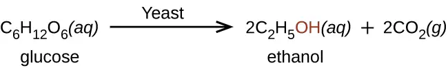
Large quantities of ethanol are synthesized from the addition reaction of water with ethylene using an acid as a catalyst:
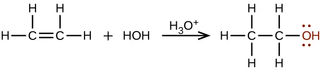
Alcohols containing two or more hydroxyl groups can be made. Examples include 1,2-ethanediol (ethylene glycol, used in antifreeze) and 1,2,3-propanetriol (glycerine, used as a solvent for cosmetics and medicines):
![Structural formulas for 1 comma 2 dash ethanediol and 1 comma 2 comma 3 dash propanetriol are shown. The first structure has a two C atom hydrocarbon chain with an O H group attached to each carbon. The O H groups are shown in red an each O atom has two sets of electron dots. Each C atom also has two H atoms bonded to it. The second structure shows a three C atom hydrocarbon chain with an O H group bonded to each carbon. The O H groups are shown in red, and each O atom has two sets of electron dots. The first C atom has two H atoms bonded to it. The second C atom has one H atom bonded to it. The third C atom has two H atoms bonded to it.](img/cnx-chem-20-02-polyols-img.webp)
Naming Alcohols¶
The name of an alcohol comes from the hydrocarbon from which it was derived. The final -e in the name of the hydrocarbon is replaced by -ol, and the carbon atom to which the –OH group is bonded is indicated by a number placed before the name.5
Example 20.8 Naming Alcohols
Consider the following example. How should it be named?
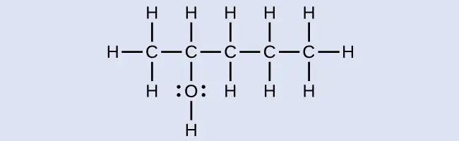
Solution
The carbon chain contains five carbon atoms. If the hydroxyl group was not present, we would have named this molecule pentane. To address the fact that the hydroxyl group is present, we change the ending of the name to -ol. In this case, since the –OH is attached to carbon 2 in the chain, we would name this molecule 2-pentanol.
Check Your Learning
Name the following molecule:
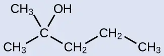
Answer:
2-methyl-2-pentanol
Ethers¶
Ethers are compounds that contain the functional group –O–. Ethers do not have a designated suffix like the other types of molecules we have named so far. In the IUPAC system, the oxygen atom and the smaller carbon branch are named as an alkoxy substituent and the remainder of the molecule as the base chain, as in alkanes. As shown in the following compound, the red symbols represent the smaller alkyl group and the oxygen atom, which would be named “methoxy.” The larger carbon branch would be ethane, making the molecule methoxyethane. Many ethers are referred to with common names instead of the IUPAC system names. For common names, the two branches connected to the oxygen atom are named separately and followed by “ether.” The common name for the compound shown in Example 20.9 is ethylmethyl ether:
Example 20.9 Naming Ethers
Provide the IUPAC and common name for the ether shown here:
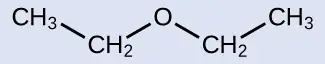
Solution
IUPAC: The molecule is made up of an ethoxy group attached to an ethane chain, so the IUPAC name would be ethoxyethane.
Common: The groups attached to the oxygen atom are both ethyl groups, so the common name would be diethyl ether.
Check Your Learning
Provide the IUPAC and common name for the ether shown:
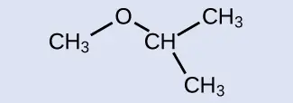
Answer:
IUPAC: 2-methoxypropane; common: isopropylmethyl ether
Ethers can be obtained from alcohols by the elimination of a molecule of water from two molecules of the alcohol. For example, when ethanol is treated with a limited amount of sulfuric acid and heated to 140 °C, diethyl ether and water are formed:
![This figure shows a reaction. The first molecule, which is labeled, “ethanol,” is a two C atom chain. The first C atom is bonded to three H atoms and a second C atom. The second C atom is bonded to a red O atom with two sets of electron dots. The O atom has a red bond to a red H atom. There is a plus sign. The next molecule, which is labeled, “ethanol,” is a red H atom with a red bond to a red O atom with two pairs of electron dots. The O atom is bonded to a C atom which is bonded to two H atoms and a second C atom. The second C atom is bonded to three H atoms. There is a green dotted box around the red H atom in the first molecule, the plus sign, and the red H and O atoms in the second molecule. To the right o the second molecule there is an arrow labeled H subscript 2 S O subscript 4 above and Greek capital delta below. The arrow is labeled, “sulfuric acid.” The resulting molecules are a C atom bonded with three H atoms and a second C atom. The second C atom is bonded to two H atoms and a red O atom. The red O atom has two sets of electron dots. The O atom is bonded to a third C atom which is bonded to two H atoms and a fourth C atom. The fourth C atom is bonded to three H atoms. This molecule is labeled, “diethyl ether.” There is a plus sign and a red H O H.](img/cnx-chem-20-02-ether-img.webp)
In the general formula for ethers, R—O—R, the hydrocarbon groups (R) may be the same or different. Diethyl ether, the most widely used compound of this class, is a colorless, volatile liquid that is highly flammable. It was first used in 1846 as an anesthetic, but better anesthetics have now largely taken its place. Diethyl ether and other ethers are presently used primarily as solvents for gums, fats, waxes, and resins. Tertiary-butyl methyl ether, C4H9OCH3 (abbreviated MTBE—italicized portions of names are not counted when ranking the groups alphabetically—so butyl comes before methyl in the common name), is used as an additive for gasoline. MTBE belongs to a group of chemicals known as oxygenates due to their capacity to increase the oxygen content of gasoline.
Link to Learning
Want more practice naming ethers? This brief video review summarizes the nomenclature for ethers.
Chemistry in Everyday Life: Carbohydrates and Diabetes
Carbohydrates are large biomolecules made up of carbon, hydrogen, and oxygen. The dietary forms of carbohydrates are foods rich in these types of molecules, like pastas, bread, and candy. The name “carbohydrate” comes from the formula of the molecules, which can be described by the general formula Cm(H2O)n, which shows that they are in a sense “carbon and water” or “hydrates of carbon.” In many cases, m and n have the same value, but they can be different. The smaller carbohydrates are generally referred to as “sugars,” the biochemical term for this group of molecules is “saccharide” from the Greek word for sugar (Figure 20.12). Depending on the number of sugar units joined together, they may be classified as monosaccharides (one sugar unit), disaccharides (two sugar units), oligosaccharides (a few sugars), or polysaccharides (the polymeric version of sugars—polymers were described in the feature box earlier in this chapter on recycling plastics). The scientific names of sugars can be recognized by the suffix -ose at the end of the name (for instance, fruit sugar is a monosaccharide called “fructose” and milk sugar is a disaccharide called lactose composed of two monosaccharides, glucose and galactose, connected together). Sugars contain some of the functional groups we have discussed: Note the alcohol groups present in the structures and how monosaccharide units are linked to form a disaccharide by formation of an ether.
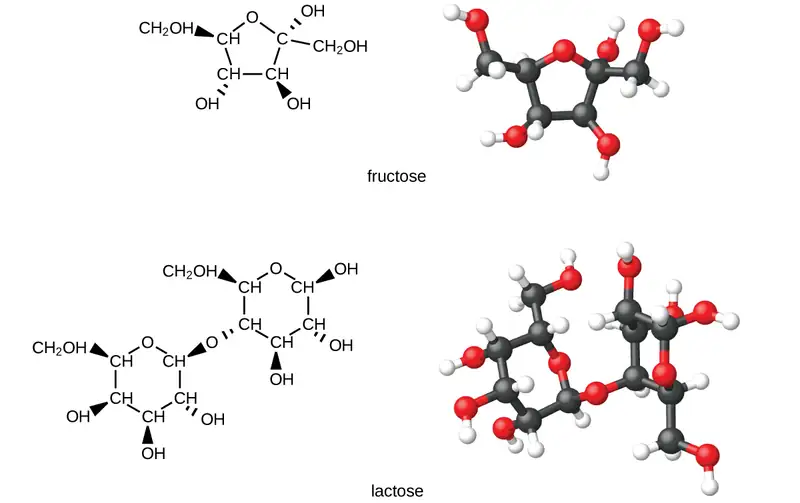
Organisms use carbohydrates for a variety of functions. Carbohydrates can store energy, such as the polysaccharides glycogen in animals or starch in plants. They also provide structural support, such as the polysaccharide cellulose in plants and the modified polysaccharide chitin in fungi and animals. The sugars ribose and deoxyribose are components of the backbones of RNA and DNA, respectively. Other sugars play key roles in the function of the immune system, in cell-cell recognition, and in many other biological roles.
Diabetes is a group of metabolic diseases in which a person has a high sugar concentration in their blood (Figure 20.13). Diabetes may be caused by insufficient insulin production by the pancreas or by the body’s cells not responding properly to the insulin that is produced. In a healthy person, insulin is produced when it is needed and functions to transport glucose from the blood into the cells where it can be used for energy. The long-term complications of diabetes can include loss of eyesight, heart disease, and kidney failure.
In 2013, it was estimated that approximately 3.3% of the world’s population (~380 million people) suffered from diabetes, resulting in over a million deaths annually. Prevention involves eating a healthy diet, getting plenty of exercise, and maintaining a normal body weight. Treatment involves all of these lifestyle practices and may require injections of insulin.
Even after treatment protocols were introduced, the need to continually monitor their glucose levels posed a challenge for people with diabetes. The first tests required a doctor or lab, and therefore limited access and frequency. Eventually, researchers developed small tablets that would react to the presence of glucose in urine, but these still required a relatively complex process. Chemist Helen Free, who was working on improvements to the tablets, conceived a simpler device: a small test strip. With her husband and research partner, Alfred Free, she produced the first such product for measuring glucose; soon after, she expanded the technology to provide test strips for other compounds and conditions. While very recent advances (such as breath tests, discussed earlier in the text) have shown promise in replacing test strips, they have been widely used for decades and remain a primary method today.
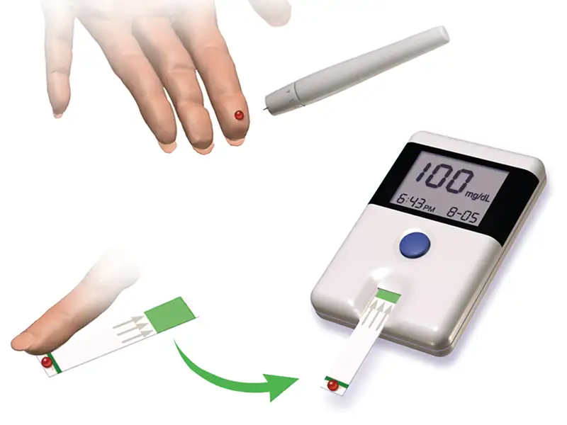
20.3 Aldehydes, Ketones, Carboxylic Acids, and Esters¶
Learning Objectives
By the end of this section, you will be able to:
- Describe the structure and properties of aldehydes, ketones, carboxylic acids and esters
Another class of organic molecules contains a carbon atom connected to an oxygen atom by a double bond, commonly called a carbonyl group. The trigonal planar carbon in the carbonyl group can attach to two other substituents leading to several subfamilies (aldehydes, ketones, carboxylic acids and esters) described in this section.
Aldehydes and Ketones¶
Both aldehydes and ketones contain a carbonyl group, a functional group with a carbon-oxygen double bond. The names for aldehyde and ketone compounds are derived using similar nomenclature rules as for alkanes and alcohols, and include the class-identifying suffixes -al and -one, respectively:
In an aldehyde, the carbonyl group is bonded to at least one hydrogen atom. In a ketone, the carbonyl group is bonded to two carbon atoms:
![Five structures are shown. The first is a C atom with an R group bonded to the left and an H atom to the right. An O atom is double bonded above the C atom. This structure is labeled, “Functional group of an aldehyde.” The second structure shows a C atom with R groups bonded to the left and right. An O atom is double bonded above the C atom. This structure is labeled, “Functional group of a ketone.” The third structure looks exactly like the functional group of a ketone. The fourth structure is labeled C H subscript 3 C H O. It is also labeled, “An aldehyde,” and “ethanal (acetaldehyde).” This structure has a C atom to which 3 H atoms are bonded above, below, and to the left. In red to the right of this C atom, a C atom is attached which has an O atom double bonded above and an H atom bonded to the right. The O atom as two sets of electron dots. The fifth structure is labeled C H subscript 3 C O C H subscript 2 C H subscript 3. It is also labeled, “A ketone,” and “butanone.” This structure has a C atom to which 3 H atoms are bonded above, below, and to the left. To the right of this in red is a C atom to which an O atom is double bonded above. The O atom has two sets of electron dots. Attached to the right of this red C atom in black is a two carbon atom chain with H atoms attached above, below, and to the right.](img/cnx-chem-20-03-aldehyde-img.webp)
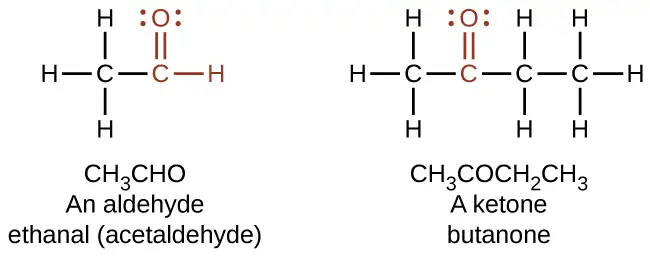
As text, an aldehyde group is represented as –CHO; a ketone is represented as –C(O)– or –CO–.
In both aldehydes and ketones, the geometry around the carbon atom in the carbonyl group is trigonal planar; the carbon atom exhibits sp2 hybridization. Two of the sp2 orbitals on the carbon atom in the carbonyl group are used to form σ bonds to the other carbon or hydrogen atoms in a molecule. The remaining sp2 hybrid orbital forms a σ bond to the oxygen atom. The unhybridized p orbital on the carbon atom in the carbonyl group overlaps a p orbital on the oxygen atom to form the π bond in the double bond.
Like the \(\text{C}=\text{O}\) bond in carbon dioxide, the \(\text{C}=\text{O}\) bond of a carbonyl group is polar (recall that oxygen is significantly more electronegative than carbon, and the shared electrons are pulled toward the oxygen atom and away from the carbon atom). Many of the reactions of aldehydes and ketones start with the reaction between a Lewis base and the carbon atom at the positive end of the polar \(\text{C}=\text{O}\) bond to yield an unstable intermediate that subsequently undergoes one or more structural rearrangements to form the final product (Figure 20.14).
![This structure shows a central C atom to which an O atom is double bonded above. To the lower left, R superscript 1 is bonded and to the lower right, R superscript 2 is bonded. A Greek lowercase delta superscript plus appears to the left of the C and just above the bond with R superscript 1. Similarly, a Greek lowercase delta superscript negative sign appears to the left of the O atom. An arc is drawn from the double bond that links the C atom and the O atom to the bond that links the C atom to the R superscript 2 group. This arc is labeled approximately 120 degrees.](img/cnx-chem-20-03-cogeom-img.webp)
The importance of molecular structure in the reactivity of organic compounds is illustrated by the reactions that produce aldehydes and ketones. We can prepare a carbonyl group by oxidation of an alcohol—for organic molecules, oxidation of a carbon atom is said to occur when a carbon-hydrogen bond is replaced by a carbon-oxygen bond. The reverse reaction—replacing a carbon-oxygen bond by a carbon-hydrogen bond—is a reduction of that carbon atom. Recall that oxygen is generally assigned a –2 oxidation number unless it is elemental or attached to a fluorine. Hydrogen is generally assigned an oxidation number of +1 unless it is attached to a metal. Since carbon does not have a specific rule, its oxidation number is determined algebraically by factoring the atoms it is attached to and the overall charge of the molecule or ion. In general, a carbon atom attached to an oxygen atom will have a more positive oxidation number and a carbon atom attached to a hydrogen atom will have a more negative oxidation number. This should fit nicely with your understanding of the polarity of C–O and C–H bonds. The other reagents and possible products of these reactions are beyond the scope of this chapter, so we will focus only on the changes to the carbon atoms:
![A reaction is shown. On the left appears an alcohol and on the right, a carbonyl group. Above the reaction arrow appears the word “oxidation.” The alcohol is represented as a C atom with dashes to the left and below, an H atom bonded above, and an O atom bonded to an H atom in red connected to the right. The O atom has two sets of electron dots. The carbonyl group is indicated in red with a C atom to which an O atom is double bonded above. Dashes appear left and right of the C atom in black. The O atom has two sets of electron dots.](img/cnx-chem-20-03-oxidation-img.webp)
Example 20.10 Oxidation and Reduction in Organic Chemistry
Methane represents the completely reduced form of an organic molecule that contains one carbon atom. Sequentially replacing each of the carbon-hydrogen bonds with a carbon-oxygen bond would lead to an alcohol, then an aldehyde, then a carboxylic acid (discussed later), and, finally, carbon dioxide:
What are the oxidation numbers for the carbon atoms in the molecules shown here?
Solution
In this example, we can calculate the oxidation number (review the chapter on oxidation-reduction reactions if necessary) for the carbon atom in each case (note how this would become difficult for larger molecules with additional carbon atoms and hydrogen atoms, which is why organic chemists use the definition dealing with replacing C–H bonds with C–O bonds described). For CH4, the carbon atom carries a –4 oxidation number (the hydrogen atoms are assigned oxidation numbers of +1 and the carbon atom balances that by having an oxidation number of –4). For the alcohol (in this case, methanol), the carbon atom has an oxidation number of –2 (the oxygen atom is assigned –2, the four hydrogen atoms each are assigned +1, and the carbon atom balances the sum by having an oxidation number of –2; note that compared to the carbon atom in CH4, this carbon atom has lost two electrons so it was oxidized); for the aldehyde, the carbon atom’s oxidation number is 0 (–2 for the oxygen atom and +1 for each hydrogen atom already balances to 0, so the oxidation number for the carbon atom is 0); for the carboxylic acid, the carbon atom’s oxidation number is +2 (two oxygen atoms each at –2 and two hydrogen atoms at +1); and for carbon dioxide, the carbon atom’s oxidation number is +4 (here, the carbon atom needs to balance the –4 sum from the two oxygen atoms).
Check Your Learning
Indicate whether the marked carbon atoms in the three molecules here are oxidized or reduced relative to the marked carbon atom in ethanol:
There is no need to calculate oxidation states in this case; instead, just compare the types of atoms bonded to the marked carbon atoms:
![Three molecular structures are shown, each with a red central C atom. In a, a C H subscript 3 group is bonded to the lower left, an H atom is bonded above, and H subscript 2 appears to the right of the central C atom. In b, an O atom is double bonded above the central C atom, a C H subscript 3 group is bonded to the lower left, and an H atom is bonded to the lower right. In c, an O atom is double bonded above the central C atom, a C H subscript 3 group is bonded to the lower left, and an O H group is bonded to the lower right.](img/cnx-chem-20-03-oxiredu-img.webp)
Answer:
(a) reduced (bond to oxygen atom replaced by bond to hydrogen atom); (b) oxidized (one bond to hydrogen atom replaced by one bond to oxygen atom); (c) oxidized (2 bonds to hydrogen atoms have been replaced by bonds to an oxygen atom)
Aldehydes are commonly prepared by the oxidation of alcohols whose –OH functional group is located on the carbon atom at the end of the chain of carbon atoms in the alcohol:
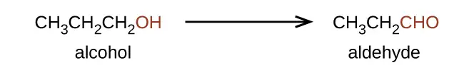
Alcohols that have their –OH groups in the middle of the chain are necessary to synthesize a ketone, which requires the carbonyl group to be bonded to two other carbon atoms:
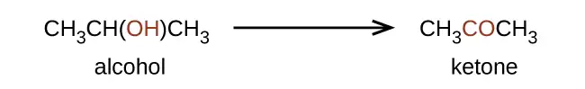
An alcohol with its –OH group bonded to a carbon atom that is bonded to no or one other carbon atom will form an aldehyde. An alcohol with its –OH group attached to two other carbon atoms will form a ketone. If three carbons are attached to the carbon bonded to the –OH, the molecule will not have a C–H bond to be replaced, so it will not be susceptible to oxidation.
Formaldehyde, an aldehyde with the formula HCHO, is a colorless gas with a pungent and irritating odor. It is sold in an aqueous solution called formalin, which contains about 37% formaldehyde by weight. Formaldehyde causes coagulation of proteins, so it kills bacteria (and any other living organism) and stops many of the biological processes that cause tissue to decay. Thus, formaldehyde is used for preserving tissue specimens and embalming bodies. It is also used to sterilize soil or other materials. Formaldehyde is used in the manufacture of Bakelite, a hard plastic having high chemical and electrical resistance.
Dimethyl ketone, CH3COCH3, commonly called acetone, is the simplest ketone. It is made commercially by fermenting corn or molasses, or by oxidation of 2-propanol. Acetone is a colorless liquid. Among its many uses are as a solvent for lacquer (including fingernail polish), cellulose acetate, cellulose nitrate, acetylene, plastics, and varnishes; as a paint and varnish remover; and as a solvent in the manufacture of pharmaceuticals and chemicals.
Carboxylic Acids and Esters¶
The odor of vinegar is caused by the presence of acetic acid, a carboxylic acid, in the vinegar. The odor of ripe bananas and many other fruits is due to the presence of esters, compounds that can be prepared by the reaction of a carboxylic acid with an alcohol. Because esters do not have hydrogen bonds between molecules, they have lower vapor pressures than the alcohols and carboxylic acids from which they are derived (see Figure 20.15).
![There are nine structures represented in this figure. The first is labeled, “raspberry,” and, “iso-butyl formate.” It shows an H atom with a line going up and to the right which then goes down and to the right. It goes up and to the right again and down and to the right and up and to the right. At the first peak is a double bond to an O atom. At the first trough is an O atom. At the second trough, there is a line going straight down. The second is labeled, “apple,” and, “butyl acetate.” There is a line that goes up and to the right, down and to the right, up and to the right, and down and to the right. At the second peak is a double bond to an O atom. At the end, on the right is O C H subscript 3. The third is labeled, “pineapple,” and, “ethyl butyrate.” It is a line that goes up and to the right, down and to the right, up and to the right, down and to the right, up and to the right, and down and to the right. At the second peak is a double bond to an O atom and at the second trough is an O atom. The fourth is labeled, “rum,” and “propyl isobutyrate.” It shows a line that goes down and to the right, up and to the right, down and to the right, up and to the right, down and to the right and up and to the right. The first complete peak has a double bond to an O atom and the second trough has an O atom. The fifth is labeled, “peach,” and “benzyl acetate.” It shows a line that goes up and to the right, down and to the right, up and to the right and down and to the right. This line connects to a hexagon with a circle inside it. The first peak has a double bond to an O atom and the first trough has an O atom. The sixth is labeled, “orange,” and, “octyl acetate.” It shows a line that goes up and to the right and down and to the right and up and to the right and down and to the right and up and to the right and down and to the right and up and to the right and down and to the right and up and to the right and down and to the right. The first peak has a double bond to an O atom and the first complete trough has and an O atom. The seventh is labeled, “wintergreen,” and “methyl salicylate.” It shows a hexagon with a circle inside of it. On the right, is a bond down and to the right to an O H group. On the right is a bond to a line that goes up and to the right and down and two the right and up and to the right. At the first peak is a double bond to an O atom, the next trough shows and O atom and at the end of the line is a C H subscript 3 group. The eighth is labeled, “honey,” and “methyl phenylacetate.” It shows a hexagon with a circle inside of it. It shows it connecting to a line on the right that goes down and to the right then up and to the right and down and to the right and up and to the right. At the first peak that is not part of the hexagon is a double bond to an O atom. At the last trough is an O atom. The ninth is labeled, “strawberry,” and “ethyl methylphenylglycidate.” This shows a hexagon with a circle inside of it. On the right, it connects to a line that goes up and to the right and down and to the right and up and to the right and down and to the right and up and to the right and down and to the right. At the first peak is a line that extends above and below. Below, it connects to an O atom. At the next trough, the line extends down and to the left to the same O atom. At the next peak is a double bond to an O atom and at the next trough is an O atom.](img/cnx-chem-20-03-carboxest1-img.webp)
Both carboxylic acids and esters contain a carbonyl group with a second oxygen atom bonded to the carbon atom in the carbonyl group by a single bond. In a carboxylic acid, the second oxygen atom also bonds to a hydrogen atom. In an ester, the second oxygen atom bonds to another carbon atom. The names for carboxylic acids and esters include prefixes that denote the lengths of the carbon chains in the molecules and are derived following nomenclature rules similar to those for inorganic acids and salts (see these examples):
![Two structures are shown. The first structure is labeled, “ethanoic acid,” and, “acetic acid.” This structure indicates a C atom to which H atoms are bonded above, below and to the left. To the right of this in red is a bonded group comprised of a C atom to which an O atom is double bonded above. To the right of the red C atom, an O atom is bonded which has an H atom bonded to its right. Both O atoms have two sets of electron dots. The second structure is labeled, “methyl ethanoate,” and, “methyl acetate.” This structure indicates a C atom to which H atoms are bonded above, below and to the left. In red, bonded to the right is a C atom with a double bonded O atom above and a single bonded O atom to the right. To the right of this last O atom in black is another C atom to which H atoms are bonded above, below and to the right. Both O atoms have two pairs of electron dots.](img/cnx-chem-20-03-carboxest2-img.webp)
The functional groups for an acid and for an ester are shown in red in these formulas.
The hydrogen atom in the functional group of a carboxylic acid will react with a base to form an ionic salt:
![A chemical reaction is shown. On the left, a structure of propionic acid is indicated. This structure includes a 2 carbon hydrocarbon group on the left end in black. Above, below, and to the left, H atoms are bonded. This group is bonded to a red group comprised of a C atom to which an O atom is double bonded above. To the right of the red C atom, an O atom is connected with a single bond. To the right of the O atom, an H atom is bonded. To the right of this structure appears a plus and N a O H. Following the reaction arrow, the propionate ion is shown. This structure is in brackets. Appearing inside the brackets, is a 2 carbon hydrocarbon group on the left end. Above, below, and to the left, H atoms are bonded. To the right of this group, a group in red is attached comprised of a C atom to which an O atom is double bonded above and a second O atom is single bonded to the right. Outside the brackets appears a superscript minus symbol. This is followed by a plus sign, N a superscript plus another plus sign and H subscript 2 O. The singly bonded O atom in the propionate ion structure has 3 pairs of electron dots. All other O atoms have two pairs of electron dots.](img/cnx-chem-20-03-carboxylic-img.webp)
Carboxylic acids are weak acids (see the chapter on acids and bases), meaning they are not 100% ionized in water. Generally only about 1% of the molecules of a carboxylic acid dissolved in water are ionized at any given time. The remaining molecules are undissociated in solution.
We prepare carboxylic acids by the oxidation of aldehydes or alcohols whose –OH functional group is located on the carbon atom at the end of the chain of carbon atoms in the alcohol:
![A chemical reaction with two arrows is shown. On the left, an alcohol, indicated with a C atom to which an R group is bonded to the left, H atoms are bonded above and below, and in red, a single bonded O atom with an H atom bonded to the right is shown. Following the first reaction arrow, an aldehyde is shown. This structure is represented with an R group bonded to a red C atom to which an H atom is bonded above and to the right, and an O atom is double bonded below and to the right. Appearing to the right of the second arrow, is a carboxylic acid comprised of an R group bonded to a C atom to which, in red, an O atom is single bonded with an H atom bonded to its right side. A red O is double bonded below and to the right. All O atoms have two pairs of electron dots.](img/cnx-chem-20-03-oxtoacid-img.webp)
Esters are produced by the reaction of acids with alcohols. For example, the ester ethyl acetate, CH3CO2CH2CH3, is formed when acetic acid reacts with ethanol:
![A chemical reaction is shown. On the left, a C H subscript 3 group bonded to a red C atom. The C atom forms a double bond with an O atom which is also in red. The C atom is also bonded to an O atom which is bonded to an H atom, also in red. A plus sign is shown, which is followed by H O C H subscript 2 C H subscript 3. The H O group is in red. Following a reaction arrow, a C H subscript 3 group is shown which is bonded to a red C atom with a double bonded O atom and a single bonded O. To the right of this single bonded O atom, a C H subscript 2 C H subscript 3 group is attached and shown in black. This structure is followed by a plus sign and H subscript 2 O. The O atoms in the first structure on the left and the structure following the reaction arrow have two pairs of electron dots.](img/cnx-chem-20-03-esterform-img.webp)
The simplest carboxylic acid is formic acid, HCO2H, known since 1670. Its name comes from the Latin word formicus, which means “ant”; it was first isolated by the distillation of red ants. It is partially responsible for the pain and irritation of ant and wasp stings, and is responsible for a characteristic odor of ants that can be sometimes detected in their nests.
Acetic acid, CH3CO2H, constitutes 3–6% vinegar. Cider vinegar is produced by allowing apple juice to ferment without oxygen present. Yeast cells present in the juice carry out the fermentation reactions. The fermentation reactions change the sugar present in the juice to ethanol, then to acetic acid. Pure acetic acid has a penetrating odor and produces painful burns. It is an excellent solvent for many organic and some inorganic compounds, and it is essential in the production of cellulose acetate, a component of many synthetic fibers such as rayon.
The distinctive and attractive odors and flavors of many flowers, perfumes, and ripe fruits are due to the presence of one or more esters (Figure 20.16). Among the most important of the natural esters are fats (such as lard, tallow, and butter) and oils (such as linseed, cottonseed, and olive oils), which are esters of the trihydroxyl alcohol glycerine, C3H5(OH)3, with large carboxylic acids, such as palmitic acid, CH3(CH2)14CO2H, stearic acid, CH3(CH2)16CO2H, and oleic acid, \(\text{CH}_{3}({\text{C}\text{H}_{2})}_{7}\text{CH}=\text{CH}{(\text{CH}_{2})}_{7}\text{C}\text{O}_{2}\text{H.}\) Oleic acid is an unsaturated acid; it contains a \(\text{C}=\text{C}\) double bond. Palmitic and stearic acids are saturated acids that contain no double or triple bonds.
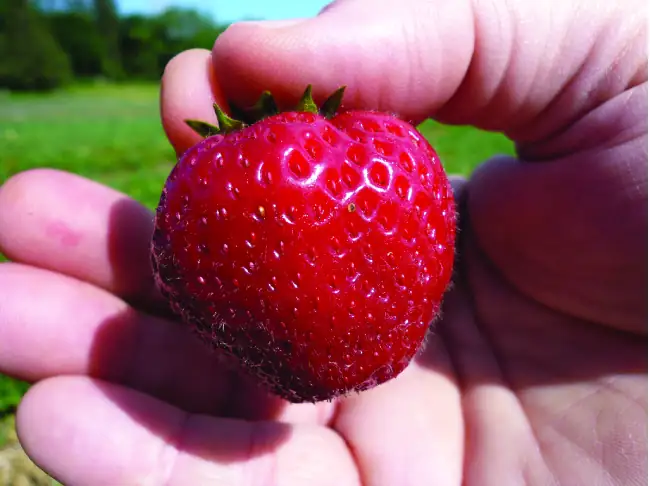
20.4 Amines and Amides¶
Learning Objectives
By the end of this section, you will be able to:
- Describe the structure and properties of an amine
- Describe the structure and properties of an amide
Amines are molecules that contain carbon-nitrogen bonds. The nitrogen atom in an amine has a lone pair of electrons and three bonds to other atoms, either carbon or hydrogen. Various nomenclatures are used to derive names for amines, but all involve the class-identifying suffix –ine as illustrated here for a few simple examples:
![Three structures are shown, each with a red, central N atom which has a pair of electron dots indicated in red above the N atoms. The first structure is labeled methyl amine. To the left of the N, a C H subscript 3 group is bonded. H atoms are bonded to the right and bottom of the central N atom. The second structure is labeled dimethyl amine. This structure has C H subscript 3 groups bonded to the left and right of the N atom and a single H atom is bonded below. The third structure is labeled trimethyl amine, which has C H subscript 3 groups bonded to the left, right, and below the central N atom.](img/cnx-chem-20-04-amines-img.webp)
In some amines, the nitrogen atom replaces a carbon atom in an aromatic hydrocarbon. Pyridine (Figure 20.17) is one such heterocyclic amine. A heterocyclic compound contains atoms of two or more different elements in its ring structure.
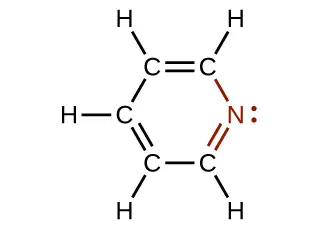
How Sciences Interconnect: DNA in Forensics and Paternity
The genetic material for all living things is a polymer of four different molecules, which are themselves a combination of three subunits. The genetic information, the code for developing an organism, is contained in the specific sequence of the four molecules, similar to the way the letters of the alphabet can be sequenced to form words that convey information. The information in a DNA sequence is used to form two other types of polymers, one of which are proteins. The proteins interact to form a specific type of organism with individual characteristics.
A genetic molecule is called DNA, which stands for deoxyribonucleic acid. The four molecules that make up DNA are called nucleotides. Each nucleotide consists of a single- or double-ringed molecule containing nitrogen, carbon, oxygen, and hydrogen called a nitrogenous base. Each base is bonded to a five-carbon sugar called deoxyribose. The sugar is in turn bonded to a phosphate group \((\text{−PO}_{4}{}^{\text{3−}})\) When new DNA is made, a polymerization reaction occurs that binds the phosphate group of one nucleotide to the sugar group of a second nucleotide. The nitrogenous bases of each nucleotide stick out from this sugar-phosphate backbone. DNA is actually formed from two such polymers coiled around each other and held together by hydrogen bonds between the nitrogenous bases. Thus, the two backbones are on the outside of the coiled pair of strands, and the bases are on the inside. The shape of the two strands wound around each other is called a double helix (see Figure 20.18).
It probably makes sense that the sequence of nucleotides in the DNA of a cat differs from those of a dog. But it is also true that the sequences of the DNA in the cells of two individual pugs differ. Likewise, the sequences of DNA in you and a sibling differ (unless your sibling is an identical twin), as do those between you and an unrelated individual. However, the DNA sequences of two related individuals are more similar than the sequences of two unrelated individuals, and these similarities in sequence can be observed in various ways. This is the principle behind DNA fingerprinting, which is a method used to determine whether two DNA samples came from related (or the same) individuals or unrelated individuals.
![Diagram a shows DNA as a double helix composed of the nitrogenous bases adenine, thymine, guanine, and cytosine paired up along a sugar-phosphate backbone. The helix has labeled 3 prime and 5 prime directions or ends. In diagram b, the molecular level arrangement of the bases connected by hydrogen bonding within the sugar-phosphate backbone is shown. Adenine is shown with hydrogen bonding to thymine and similarly the linkage via hydrogen bonding between cytosine and guanine is shown. Again, 3 prime and 5 prime directional information is provided. In diagram c, the bonding between a nitrogenous base, sugar, and phosphate is shown.](img/cnx-chem-20-04-dna.webp)
Using similarities in sequences, technicians can determine whether a man is the father of a child (the identity of the mother is rarely in doubt, except in the case of an adopted child and a potential birth mother). Likewise, forensic geneticists can determine whether a crime scene sample of human tissue, such as blood or skin cells, contains DNA that matches exactly the DNA of a suspect.
Link to Learning
Watch this video animation of how DNA is packaged for a visual lesson in its structure.
Like ammonia, amines are weak bases due to the lone pair of electrons on their nitrogen atoms:
![Two reactions are shown. In the first, ammonia reacts with H superscript plus. An unshared pair of electron dots sits above the N atom. To the left, right, and bottom, H atoms are bonded. This is followed by a plus symbol and an H atom with a superscript plus symbol. To the right of the reaction arrow, ammonium ion is shown in brackets with a superscript plus symbol outside. Inside the brackets, the N atom is shown with H atoms bonded on all four sides. In a very similar second reaction, methyl amine reacts with H superscript plus to yield methyl ammonium ion. The methyl amine structure is like ammonia except a C H subscript 3 group is attached in place of the left most H atom in the structure. Similarly, the resulting methyl ammonium ion is represented in brackets with a superscript plus symbol appearing outside. Inside, the structure is similar to that of methyl amine except that an H atom appears at the top of the N atom where the unshared electron pair was previously shown.](img/cnx-chem-20-04-ammonia-img.webp)
The basicity of an amine’s nitrogen atom plays an important role in much of the compound’s chemistry. Amine functional groups are found in a wide variety of compounds, including natural and synthetic dyes, polymers, vitamins, and medications such as penicillin and codeine. They are also found in many molecules essential to life, such as amino acids, hormones, neurotransmitters, and DNA.
How Sciences Interconnect: Addictive Alkaloids
Since ancient times, plants have been used for medicinal purposes. One class of substances, called alkaloids, found in many of these plants has been isolated and found to contain cyclic molecules with an amine functional group. These amines are bases. They can react with H3O+ in a dilute acid to form an ammonium salt, and this property is used to extract them from the plant:
The name alkaloid means “like an alkali.” Thus, an alkaloid reacts with acid. The free compound can be recovered after extraction by reaction with a base:
The structures of many naturally occurring alkaloids have profound physiological and psychotropic effects in humans. Examples of these drugs include nicotine, morphine, codeine, and heroin. The plant produces these substances, collectively called secondary plant compounds, as chemical defenses against the numerous pests that attempt to feed on the plant:
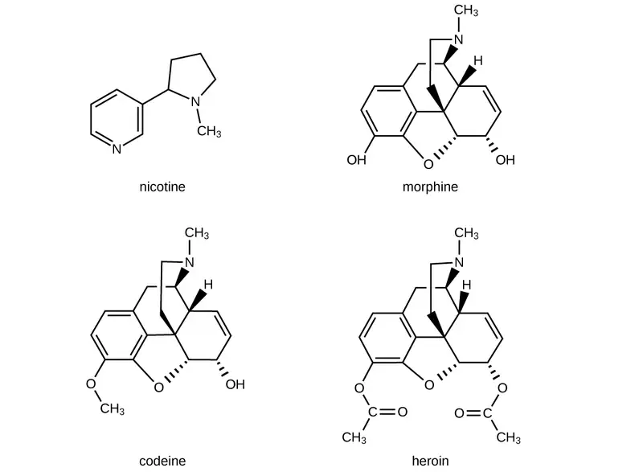
In these diagrams, as is common in representing structures of large organic compounds, carbon atoms in the rings and the hydrogen atoms bonded to them have been omitted for clarity. The solid wedges indicate bonds that extend out of the page. The dashed wedges indicate bonds that extend into the page. Notice that small changes to a part of the molecule change the properties of morphine, codeine, and heroin. Morphine, a strong narcotic used to relieve pain, contains two hydroxyl functional groups, located at the bottom of the molecule in this structural formula. Changing one of these hydroxyl groups to a methyl ether group forms codeine, a less potent drug used as a local anesthetic. If both hydroxyl groups are converted to esters of acetic acid, the powerfully addictive drug heroin results (Figure 20.19).
Amides are molecules that contain nitrogen atoms connected to the carbon atom of a carbonyl group. Like amines, various nomenclature rules may be used to name amides, but all include use of the class-specific suffix -amide:
![This figure shows three structures. Two examples are provided. The basic structure has an H atom or R group bonded to a C atom which is double bonded to an O atom. The O atom as two sets of electron dots. The C atom is bonded to an N atom which in turn is bonded to two R groups or two H atoms. The N atom as one set of electron dots. The next structure includes acetamide, which has C H subscript 3 bonded to a C atom with a doubly bonded O atom. The second C atom is also bonded to N H subscript 2. Hexanamide has a hydrocarbon chain of length 6 involving all single bonds. The condensed structure is shown here. To the sixth C atom at the right end of the chain, an O atom is double bonded and an N H subscript 2 group is single bonded.](img/cnx-chem-20-04-amide1-img.webp)
Amides can be produced when carboxylic acids react with amines or ammonia in a process called amidation. A water molecule is eliminated from the reaction, and the amide is formed from the remaining pieces of the carboxylic acid and the amine (note the similarity to formation of an ester from a carboxylic acid and an alcohol discussed in the previous section):
![A chemical reaction is shown between a carboxylic acid and amine to form an amide and water. Structures are shown. The carboxylic acid is shown as a C H subscript 3 group bonded to a C H subscript 2 group bonded to a C atom with a double bonded O atom above and an O H group bonded to the right. There is a plus sign. The amine is shown as an N atom with two H atoms bonded to the bottom and left sides. A C H subscript 3 group is bonded to the right side of the N atom. To the right of an arrow, an amide is shown as a C H subscript 3 group bonded to a C H subscript 2 group bonded to a C atom which is double bonded to an O atom above and an N with an H atom bonded below. The N atom is bonded to a C H subscript 3 group. The final product indicated after a plus sign is water, H subscript 2 O.](img/cnx-chem-20-04-amide2-img.webp)
The reaction between amines and carboxylic acids to form amides is biologically important. It is through this reaction that amino acids (molecules containing both amine and carboxylic acid substituents) link together in a polymer to form proteins.
How Sciences Interconnect: Proteins and Enzymes
Proteins are large biological molecules made up of long chains of smaller molecules called amino acids. Organisms rely on proteins for a variety of functions—proteins transport molecules across cell membranes, replicate DNA, and catalyze metabolic reactions, to name only a few of their functions. The properties of proteins are functions of the combination of amino acids that compose them and can vary greatly. Interactions between amino acid sequences in the chains of proteins result in the folding of the chain into specific, three-dimensional structures that determine the protein’s activity.
Amino acids are organic molecules that contain an amine functional group (–NH2), a carboxylic acid functional group (–COOH), and a side chain (that is specific to each individual amino acid). Most living things build proteins from the same 20 different amino acids. Amino acids connect by the formation of a peptide bond, which is a covalent bond formed between two amino acids when the carboxylic acid group of one amino acid reacts with the amine group of the other amino acid. The formation of the bond results in the production of a molecule of water (in general, reactions that result in the production of water when two other molecules combine are referred to as condensation reactions). The resulting bond—between the carbonyl group carbon atom and the amine nitrogen atom is called a peptide link or peptide bond. Since each of the original amino acids has an unreacted group (one has an unreacted amine and the other an unreacted carboxylic acid), more peptide bonds can form to other amino acids, extending the structure. (Figure 20.20) A chain of connected amino acids is called a polypeptide. Proteins contain at least one long polypeptide chain.
![This figure shows two amino acid molecules. These molecules have two singly bonded carbon atoms to which an amino group is bonded on the left and the C atom to the right is a component of a carboxyl group. The C atom at the center has an R group bonded below and an H atom bonded above. The amino acid at the top left has an amino group identified and enclosed in a green dashed rectangle. This group is comprised of an N atom with two bonded H atoms. The amino acid at the right has a carboxyl group identified in a green dashed rectangle. This group has a C atom to which an O H group and a doubly bonded O atom are bonded. The amino acid to the left has the O H group to the lower right in red. The amino acid on the right has an H atom that is bonded to the N atom in red. An arrow points downward and is labeled condensation reaction. A curved arrow extends down and to the right off of the downward arrow, pointing to H subscript 2 O, which is in red. A single, larger molecule appears beneath the downward arrow. At the locations of the red O H group and H atom, the amino acid molecules are bonded together. This bond is labeled as a peptide bond and the larger molecule formed is labeled as a polypeptide chain.](img/cnx-chem-20-04-peptide.webp)
Enzymes are large biological molecules, mostly composed of proteins, which are responsible for the thousands of metabolic processes that occur in living organisms. Enzymes are highly specific catalysts; they speed up the rates of certain reactions. Enzymes function by lowering the activation energy of the reaction they are catalyzing, which can dramatically increase the rate of the reaction. Most reactions catalyzed by enzymes have rates that are millions of times faster than the noncatalyzed version. Like all catalysts, enzymes are not consumed during the reactions that they catalyze. Enzymes do differ from other catalysts in how specific they are for their substrates (the molecules that an enzyme will convert into a different product). Each enzyme is only capable of speeding up one or a few very specific reactions or types of reactions. Since the function of enzymes is so specific, the lack or malfunctioning of an enzyme can lead to serious health consequences. One disease that is the result of an enzyme malfunction is phenylketonuria. In this disease, the enzyme that catalyzes the first step in the degradation of the amino acid phenylalanine is not functional (Figure 20.21). Untreated, this can lead to an accumulation of phenylalanine, which can lead to intellectual disabilities.
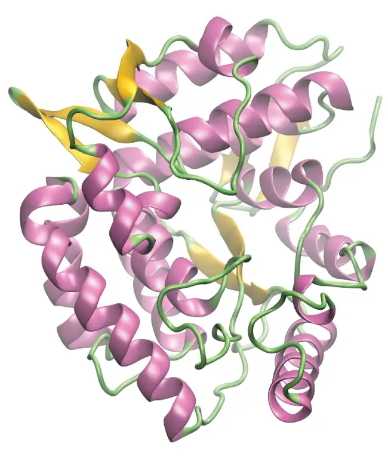
Chemistry in Everyday Life: Kevlar
Kevlar (Figure 20.22) is a synthetic polymer made from two monomers 1,4-phenylene-diamine and terephthaloyl chloride (Kevlar is a registered trademark of DuPont). The material was developed by Stephanie Kwolek while she worked to find a replacement for steel in tires. Kwolek's work involved synthesizing polyamides and dissolving them in solvents, then spinning the resulting solution into fibers. One of her solutions proved to be quite different in initial appearance and structure. And once spun, the resulting fibers were particularly strong. From this initial discovery, Kevlar was created. The material has a high tensile strength-to-weight ratio (it is about 5 times stronger than an equal weight of steel), making it useful for many applications from bicycle tires to sails to body armor.
![A structural formula is shown for the polymer Kevlar. The structure appears inside brackets which have single dashes extending from them at the left and right ends. Outside the lower right corner of the brackets, an italicized n appears. The structure inside the brackets includes a C atom forming a double bond with an O atom and a bond with a benzene ring. The benzene ring forms a bond with another C atom which has a double bond with an O atom. The C atom is bonded to an N atom. The N atom is bonded to an H atom and a benzene ring. The benzene ring bonds with another N atom which is also bonded to an H atom.](img/cnx-chem-20-04-kevlar1.webp)
The material owes much of its strength to hydrogen bonds between polymer chains (refer back to the chapter on intermolecular interactions). These bonds form between the carbonyl group oxygen atom (which has a partial negative charge due to oxygen’s electronegativity) on one monomer and the partially positively charged hydrogen atom in the N–H bond of an adjacent monomer in the polymer structure (see dashed line in Figure 20.23). There is additional strength derived from the interaction between the unhybridized p orbitals in the six-membered rings, called aromatic stacking.
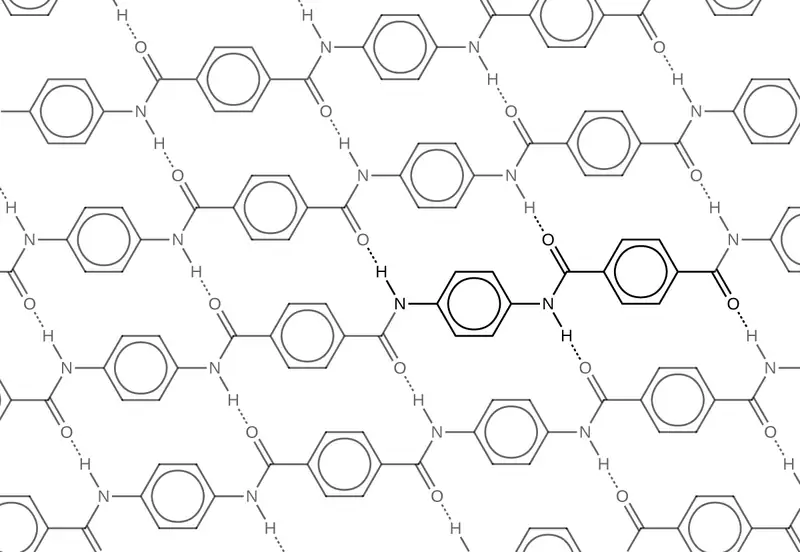
Kevlar may be best known as a component of body armor, combat helmets, and face masks. Since the 1980s, the US military has used Kevlar as a component of the PASGT (personal armor system for ground troops) helmet and vest. Kevlar is also used to protect armored fighting vehicles and aircraft carriers. Civilian applications include protective gear for emergency service personnel such as body armor for police officers and heat-resistant clothing for fire fighters. Kevlar based clothing is considerably lighter and thinner than equivalent gear made from other materials (Figure 20.24). Beyond Kevlar, Stephanie Kwolek was instrumental in the development of Nomex, a fireproof material, and was also involved in the creation of Lycra. She became just the fourth woman inducted into the National Inventors Hall of Fame, and received a number of other awards for her significant contributions to science and society.
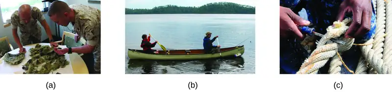
In addition to its better-known uses, Kevlar is also often used in cryogenics for its very low thermal conductivity (along with its high strength). Kevlar maintains its high strength when cooled to the temperature of liquid nitrogen (–196 °C).
The table here summarizes the structures discussed in this chapter:
![This table provides compound names, structures with functional groups in red, and examples that include formulas, structural formulas, ball-and-stick models, and names. Compound names include alkene, alkyne, alcohol, ether, aldehyde, ketone, carboxylic acid, ester, amine, and amide. Alkenes have a double bond. A formula is C subscript 2 H subscript 4 which is named ethene. The ball-and-stick model shows two black balls forming a double bond and each is bonded to two white balls. Alkynes have a triple bond. A formula is C subscript 2 H subscript 2 which is named ethyne. The ball-and-stick model shows two black balls with a triple bond between them each bonded to one white ball. Alcohols have an O H group. The O has two pairs of electron dots. A formula is C H subscript 3 C H subscript 2 O H which is named ethanol. The ball-and-stick model shows two black balls and one red ball bonded to each other with a single bond. There are four white balls visible. Ethers have an O atom in the structure between two R groups. The O atom has two sets of electron dots. A formula is ( C subscript 2 H subscript 5 ) subscript 2 O which is named ethanal. The ball-and-stick model shows two black balls bonded to a red ball which is bonded to two more black balls. All bonds are single. There are five white balls visible. Aldehydes have a C atom to which a double bonded O and an H and an R are included in the structure. The O atom has two sets of electron dots. A formula is C H subscript 3 C H O which is named Ethanal. The ball-and-stick model shows two black bonds bonded to two red balls. The ball-and-stick model shows two black balls bonded with a single bond and the second black ball forms a double bond with a red ball. There are three white balls visible. Ketones show a C atom to which a double bonded O is attached. The left side of the C atom is bonded to R and the right side is bonded to R prime. The O atom as two sets of electron dots. The formula is C H subscript 3 C O C H subscript 2 C H subscript 3 and is named methyl ethyl ketone. The ball-and-stick models shows four black balls all forming single bonds with each other. The second black ball forms a double bond with a red ball. There are five white balls visible. Carboxylic acids have a C to which a double bonded O and an O H are included in the structure. Each O atom has two sets of electron dots. A formula is C H subscript 3 C O O H which is named ethanoic or acetic acid. The ball-and-stick model shows two black balls and one red ball forming single bonds with each other. The second black ball also forms a double bond with another red ball. Three white balls are visible. Esters have a C atom which forms a double bond with an O atom and single bond with another O atom which has an attached hydrocarbon group in the structure. Each O atom has two sets of electron dots. A formula is C H subscript 3 C O subscript 2 C H subscript 2 C H subscript 3 which is named ethyl acetate. The ball-and-stick model shows two black balls, a red ball, and two more black balls forming single bonds with each other. The second black ball forms a double bond with another red ball. There are five white balls visible. Amines have an N atom in the structure to which three hydrocarbon groups, two hydrocarbon groups and one H atom, or one hydrocarbon group and two H atoms may be bonded. Each n has a single set of electron dots. A formula is C subscript 2 H subscript 5 N H subscript 2 which is named ethylamine. The ball-and-stick model shows two black balls and one blue ball forming single bonds with each other. There are five white balls visible. Amides have a C to which a double bonded O and single N incorporated in a structure between two hydrocarbon groups. One hydrocarbon group is bonded to the C, the other to the N. Amides can also have a H atom bonded to the N. The O atom as two sets of electron dots, and the N atom has one set. A formula is C H subscript 3 C O N H subscript 2 which is named ethanamide or acetamide. The ball-and-stick model shows two black balls and one blue ball forming single bonds with each other. The second black ball forms a double bond with one red ball. There are four white balls visible.](img/cnx-chem-20-02-functgroup-img.webp)
Chapter Review¶
Key Terms¶
- addition reaction
- reaction in which a double carbon-carbon bond forms a single carbon-carbon bond by the addition of a reactant. Typical reaction for an alkene.
- alcohol
- organic compound with a hydroxyl group (–OH) bonded to a carbon atom
- aldehyde
- organic compound containing a carbonyl group bonded to two hydrogen atoms or a hydrogen atom and a carbon substituent
- alkane
- molecule consisting of only carbon and hydrogen atoms connected by single (σ) bonds
- alkene
- molecule consisting of carbon and hydrogen containing at least one carbon-carbon double bond
- alkyl group
- substituent, consisting of an alkane missing one hydrogen atom, attached to a larger structure
- alkyne
- molecule consisting of carbon and hydrogen containing at least one carbon-carbon triple bond
- amide
- organic molecule that features a nitrogen atom connected to the carbon atom in a carbonyl group
- amine
- organic molecule in which a nitrogen atom is bonded to one or more alkyl group
- aromatic hydrocarbon
- cyclic molecule consisting of carbon and hydrogen with delocalized alternating carbon-carbon single and double bonds, resulting in enhanced stability
- carbonyl group
- carbon atom double bonded to an oxygen atom
- carboxylic acid
- organic compound containing a carbonyl group with an attached hydroxyl group
- ester
- organic compound containing a carbonyl group with an attached oxygen atom that is bonded to a carbon substituent
- ether
- organic compound with an oxygen atom that is bonded to two carbon atoms
- functional group
- part of an organic molecule that imparts a specific chemical reactivity to the molecule
- ketone
- organic compound containing a carbonyl group with two carbon substituents attached to it
- organic compound
- natural or synthetic compound that contains carbon
- saturated hydrocarbon
- molecule containing carbon and hydrogen that has only single bonds between carbon atoms
- skeletal structure
- shorthand method of drawing organic molecules in which carbon atoms are represented by the ends of lines and bends in between lines, and hydrogen atoms attached to the carbon atoms are not shown (but are understood to be present by the context of the structure)
- substituent
- branch or functional group that replaces hydrogen atoms in a larger hydrocarbon chain
- substitution reaction
- reaction in which one atom replaces another in a molecule
Key Concepts and Summary¶
20.1 Hydrocarbons¶
Strong, stable bonds between carbon atoms produce complex molecules containing chains, branches, and rings. The chemistry of these compounds is called organic chemistry. Hydrocarbons are organic compounds composed of only carbon and hydrogen. The alkanes are saturated hydrocarbons—that is, hydrocarbons that contain only single bonds. Alkenes contain one or more carbon-carbon double bonds. Alkynes contain one or more carbon-carbon triple bonds. Aromatic hydrocarbons contain ring structures with delocalized π electron systems.
20.2 Alcohols and Ethers¶
Many organic compounds that are not hydrocarbons can be thought of as derivatives of hydrocarbons. A hydrocarbon derivative can be formed by replacing one or more hydrogen atoms of a hydrocarbon by a functional group, which contains at least one atom of an element other than carbon or hydrogen. The properties of hydrocarbon derivatives are determined largely by the functional group. The –OH group is the functional group of an alcohol. The –R–O–R– group is the functional group of an ether.
20.3 Aldehydes, Ketones, Carboxylic Acids, and Esters¶
Functional groups related to the carbonyl group include the –CHO group of an aldehyde, the –CO– group of a ketone, the –CO2H group of a carboxylic acid, and the –CO2R group of an ester. The carbonyl group, a carbon-oxygen double bond, is the key structure in these classes of organic molecules: Aldehydes contain at least one hydrogen atom attached to the carbonyl carbon atom, ketones contain two carbon groups attached to the carbonyl carbon atom, carboxylic acids contain a hydroxyl group attached to the carbonyl carbon atom, and esters contain an oxygen atom attached to another carbon group connected to the carbonyl carbon atom. All of these compounds contain oxidized carbon atoms relative to the carbon atom of an alcohol group.
20.4 Amines and Amides¶
The addition of nitrogen into an organic framework leads to two families of molecules. Compounds containing a nitrogen atom bonded in a hydrocarbon framework are classified as amines. Compounds that have a nitrogen atom bonded to one side of a carbonyl group are classified as amides. Amines are a basic functional group. Amines and carboxylic acids can combine in a condensation reaction to form amides.
Exercises¶
20.1 Hydrocarbons¶
1. Write the chemical formula and Lewis structure of the following, each of which contains five carbon atoms:
(a) an alkane
(b) an alkene
(c) an alkyne
Answer
There are several sets of answers; one is:
(a) C5H12
(b) C5H10
![A chain of five C atoms is shown. The first C atom (from left to right) forms a single bond with the second C atom. The second C atom forms a single bond with the third C atom. The third C atom forms a double bond with the fourth C atom. The fourth C atom forms a single bond to the fifth C atom. The first C atom (from left to right) as three H atoms bonded to it. The second C atom has two H atoms bonded to it. The third C atom has one H atom bonded to it. The fourth C atom has one H atom bonded to it. The fifth C atom as three H atoms bonded to it.](img/cnx-chem-20-01-ex1-1b-img.webp)
(c) C5H8
2. What is the difference between the hybridization of carbon atoms’ valence orbitals in saturated and unsaturated hydrocarbons?
3. On a microscopic level, how does the reaction of bromine with a saturated hydrocarbon differ from its reaction with an unsaturated hydrocarbon? How are they similar?
Answer
Both reactions result in bromine being incorporated into the structure of the product. The difference is the way in which that incorporation takes place. In the saturated hydrocarbon, an existing C–H bond is broken, and a bond between the C and the Br can then be formed. In the unsaturated hydrocarbon, the only bond broken in the hydrocarbon is the π bond whose electrons can be used to form a bond to one of the bromine atoms in Br2 (the electrons from the Br–Br bond form the other C–Br bond on the other carbon that was part of the π bond in the starting unsaturated hydrocarbon).
4. On a microscopic level, how does the reaction of bromine with an alkene differ from its reaction with an alkyne? How are they similar?
5. Explain why unbranched alkenes can form geometric isomers while unbranched alkanes cannot. Does this explanation involve the macroscopic domain or the microscopic domain?
Answer
Unbranched alkanes have free rotation about the C–C bonds, yielding all orientations of the substituents about these bonds equivalent, interchangeable by rotation. In the unbranched alkenes, the inability to rotate about the \(\text{C}=\text{C}\) bond results in fixed (unchanging) substituent orientations, thus permitting different isomers. Since these concepts pertain to phenomena at the molecular level, this explanation involves the microscopic domain.
6. Explain why these two molecules are not isomers:
![Two structural formulas are shown. In the first, a chain of six carbon atoms with a single double bond between carbons two and three counting right to left across the molecule is shown with twelve total H atoms bonded. H atoms are bonded at each end of the molecule as well as above. H atoms are also bonded below all C atoms except those involved in the double bond. In the second structure, a hydrocarbon chain of five C atoms connected by single bonds is shown. A single C with three attached H atoms is bonded beneath the second carbon counting right to left across the molecule.](img/cnx-chem-20-01-notiso1-img.webp)
7. Explain why these two molecules are not isomers:
![Two structural formulas are shown. In the first, a horizontal hydrocarbon chain consisting of six singly bonded C atoms is shown. Each C atom has an H atom bonded above and below it. The two C atoms on either end of the chain each have a third H atom bonded to them. In the second structure, a horizontal hydrocarbon chain composed of five C atoms connected by single bonds is shown with a sixth C atom singly bonded beneath the right-most C atom. The first C atom (from left to right) has three H atoms bonded to it. The second C atom has two H atoms bonded to it. The third C atom has two H atoms bonded to it. The fourth C atom has two H atoms bonded to it. The fifth C atom has two H atoms bonded to it. The C atom bonded below the fifth C atom has three H atoms bonded to it.](img/cnx-chem-20-01-notiso2-img.webp)
Answer
They are the same compound because each is a saturated hydrocarbon containing an unbranched chain of six carbon atoms.
8. How does the carbon-atom hybridization change when polyethylene is prepared from ethylene?
9. Write the Lewis structure and molecular formula for each of the following hydrocarbons:
(a) hexane
(b) 3-methylpentane
(c) cis-3-hexene
(d) 4-methyl-1-pentene
(e) 3-hexyne
(f) 4-methyl-2-pentyne
Answer
(a) C6H14
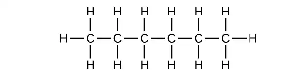
(b) C6H14
![This figure shows five C atoms bonded together with a sixth C atom bonded below the chain. The first C atom (from left to right) has three H atoms bonded to it and is also bonded to another C atom. The second C atom has two H atoms bonded above and below it and is also bonded to another C atom. The third C atom has an H atom bonded above it and a C atom bonded below it. The C atom bonded below the third C atom in the chain has three H atoms bonded to it. The third C atom is also bonded to another C atom. The fourth C atom in the chain has two H atoms bonded above and below it and is bonded to another C atom. The fifth C atom has three H atoms bonded to it.](img/cnx-chem-20-01-hexane-b-img.webp)
(c) C6H12
![This figure shows a C atom with three H atoms bonded to it. This C atom is bonded to another C atom with two H atoms bonded above and below it. The second C atom is also bonded to another C atom down and to the right. This C atom is bonded to one H atom and has a double bond to a fourth C atom. The fourth C atom is also bonded to one H atom. The fourth C atom has a bond up and to the right to another C atom. This C atom has two H atoms bonded above and below it. This C atom also bonds to another C atom which is bonded to three H atoms.](img/cnx-chem-20-01-hexane-c-img.webp)
(d) C6H12
![This figure shows a hydrocarbon chain with a length of five C atoms. The first C atom (from left to right) is bonded to two H atoms and also forms a double bond with the second C atom. The second C atom is bonded to one H atom above it and is also bonded to a third C atom. The third C atom is bonded to two H atoms and also bonded to a fourth C atom. The fourth C atom is bonded to one H atom above it and a C atom below it. The C atom bonded to the fourth C atom in the chain has three H atoms bonded to it. The fourth C atom is also bonded to a fifth C atom which is bonded to three H atoms.](img/cnx-chem-20-01-hexane-d-img.webp)
(e) C6H10
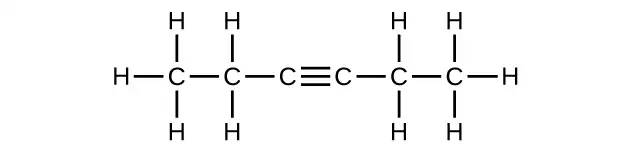
(f) C6H10
![This figure shows a hydrocarbon chain with a length of five C atoms. The first C atom (from left to right) has three H atoms bonded to it. It is also bonded to a second C atom. The second C atom forms a triple bond to a third C atom. The third C atom forms a single bond with a fourth C atom. The fourth C atom has an H atom bonded above it and a C atom bonded below it. The C atom bonded below the fourth C atom has three H atoms bonded to it. The fourth C atom is bonded to a fifth C atom. The fifth C atom has three H atoms bonded to it.](img/cnx-chem-20-01-hexane-f-img.webp)
10. Write the chemical formula, condensed formula, and Lewis structure for each of the following hydrocarbons:
(a) heptane
(b) 3-methylhexane
(c) trans-3-heptene
(d) 4-methyl-1-hexene
(e) 2-heptyne
(f) 3,4-dimethyl-1-pentyne
11. Give the complete IUPAC name for each of the following compounds:
(a) CH3CH2CBr2CH3
(b) (CH3)3CCl
(c)
(d)
(e)
(f)
(g) \({(\text{CH}_{3})}_{2}\text{CHCH}_{2}\text{CH}=\text{CH}_{2}\)
Answer
(a) 2,2-dibromobutane; (b) 2-chloro-2-methylpropane; (c) 2-methylbutane; (d) 1-butyne; (e) 4-fluoro-4-methyl-1-octyne; (f) trans-1-chloropropene; (g) 4-methyl-1-pentene
12. Give the complete IUPAC name for each of the following compounds:
(a) (CH3)2CHF
(b) CH3CHClCHClCH3
(c)
(d) \(\text{CH}_{3}\text{CH}_{2}\text{CH}=\text{CHCH}_{3}\)
(e)
(f) \({(\text{CH}_{3})}_{3}\text{CCH}_{2}\text{C}\equiv\text{CH}\)
13. Butane is used as a fuel in disposable lighters. Write the Lewis structure for each isomer of butane.
Answer
![Two structures are shown. The first includes a chain of four singly bonded C atoms. Each C atom has two H atoms bonded above and below it. The two C atoms at either end of the chain each have a third H atom bonded to it. The molecule is named n dash butane. The second includes a chain of three singly bonded C atoms with a C atom bonded above the middle C atom in the chain. The first C atom (from left to right) has three H atoms bonded to it. The second C atom has one H atom bonded below it and a C atom bonded above it. The C atom bonded above the middle C atom has three H atoms bonded to it. The third C atom in the chain has three H atoms bonded to it. This molecule is named 2 dash methylpropane.](img/cnx-chem-20-01-ex1-14-img.webp)
14. Write Lewis structures and name the five structural isomers of hexane.
15. Write Lewis structures for the cis–trans isomers of \(\text{CH}_{3}\text{CH}=\text{CHCl.}\)
Answer
![This figure includes two structural formulas. The first structure shows two double bounded C atoms with C l bonded to the upper right, C H subscript 3 bonded to the upper left, and H atoms attached to the lower right and lower left in the structure. This structure is labeled cis dash. The second structure shows two double bounded carbon atoms with C l attached to the lower right, C H subscript 3 attached to the upper left, and H atoms attached to the upper right and lower left in the structure. This structure is labeled trans dash.](img/cnx-chem-20-01-ex1-16-img.webp)
16. Write structures for the three isomers of the aromatic hydrocarbon xylene, C6H4(CH3)2.
17. Isooctane is the common name of the isomer of C8H18 used as the standard of 100 for the gasoline octane rating:
(a) What is the IUPAC name for the compound?
(b) Name the other isomers that contain a five-carbon chain with three methyl substituents.
Answer
(a) 2,2,4-trimethylpentane; (b) 2,2,3-trimethylpentane, 2,3,4-trimethylpentane, and 2,3,3-trimethylpentane:
![Three hydrocarbon molecular structures are shown. The first has C H subscript 3 bonded up and to the right to a C atom. The C atom is bonded down and to the right to C H. C H is bonded up and to the right to C H subscript 2. C H subscript 2 is bonded down and to the right to C H subscript 3. The lone C atom is bonded to two C H subscript 3 groups. The C in the C H group is bonded to a C H subscript 3 group. The second structure shows C H subscript 3 bonded up and to the right to C H which is bonded down and to the right to C H. C H is bonded up and to the right to another C H which is bonded down and to the right to C H subscript 3. The initial C atom is bonded to a C H subscript 3 group. The second C atom is bonded to a C H subscript 3 group. The third C atom is bonded to a C H subscript 3 group. The third structure shows C H subscript 3 bonded up and to the right to C H which is bonded down and to the right to C. C is bonded up and to the right to C H subscript 2 which is bonded down and to the right to C H subscript 3. The second C atom is bonded to a C H subscript 3 group. The third C atom is bonded to two C H subscript 3 groups.](img/cnx-chem-20-01-ex1-18b-img.webp)
18. Write Lewis structures and IUPAC names for the alkyne isomers of C4H6.
19. Write Lewis structures and IUPAC names for all isomers of C4H9Cl.
Answer
![Four structural formulas are provided. The first has a hydrocarbon chain with a length of four C atom. All bonds are single. Nine H atoms are attached and a single C l atom is attached at the far right end of the structure which is labeled 1 dash chlorobutane. The second has a hydrocarbon chain with a length four C atoms. All bonds are single. Nine H atoms are attached and a single C l atom is attached above the second carbon counting left to right. This structure is labeled 2 dash chlorobutane. The third has a hydrocarbon chain with a length of three C atoms. All bonds are single. A single C l atom is bonded beneath the middle C atom and a C H subscript 3 group is also bonded above the middle C atom. Six H atoms are attached, and the structure is labeled 2 dash chloro dash 2 dash methylpropane. The fourth structure has a hydrocarbon chain with a length of three C atoms. All bonds are single. A single C l atom is bonded beneath the first C atom (from left to right) and a C H subscript 3 group is bonded above the middle C atom. Six H atoms are attached, and the structure is labeled 1 dash chloro dash 2 dash methylpropane.](img/cnx-chem-20-01-ex1-20-img.webp)
20. Name and write the structures of all isomers of the propyl and butyl alkyl groups.
21. Write the structures for all the isomers of the –C5H11 alkyl group.
Answer
In the following, the carbon backbone and the appropriate number of hydrogen atoms are shown in condensed form:
![Eight structures are shown. The first includes C H subscript 3 bonded to C H subscript 2 bonded to C H subscript 2 bonded to C H subscript 2 bonded to C H subscript 2 with a bond. The second shows C H subscript 3 bonded to C H subscript 2 bonded to C H subscript 2 bonded to C H bonded to C H subscript 3. There is a bond above the fourth C atom (from left to right). The third shows C H subscript 3 bonded to C H subscript 2 bonded to C H bonded to C H subscript 2 bonded to C H subscript 3. There is a bond above the third C atom (from left to right). The five remaining examples involve branching. The fourth structure shows C H subscript 3 bonded to C bonded to C. The second C atom (from left to right) has a bond above it and a bond to an H atom below it. The third C is bonded to two C H subscript 3 groups as well as an H atom. The fifth shows a bond leading to a C H subscript 2 group which is bonded to a C atom. This C atom is bonded to three C H subscript 3 groups. The sixth shows a bond and then C H subscript 2 bonded to C H subscript 2 bonded to C H. The C H is bonded to two C H subscript 3 groups. The seventh shows C H subscript 3 bonded to C H subscript 2 bonded to C with a bond. The C is also bonded to two C H subscript 3 groups. The final structure shows C H subscript 3 bonded to C H subscript 2 bonded to C H. The C H is bonded to a C H subscript 2 group with a bond and a C H subscript 3 group.](img/cnx-chem-20-01-ex1-21-img.webp)
22. Write Lewis structures and describe the molecular geometry at each carbon atom in the following compounds:
(a) cis-3-hexene
(b) cis-1-chloro-2-bromoethene
(c) 2-pentyne
(d) trans-6-ethyl-7-methyl-2-octene
23. Benzene is one of the compounds used as an octane enhancer in unleaded gasoline. It is manufactured by the catalytic conversion of acetylene to benzene:
\(3\text{C}_{2}\text{H}_{2}\:\longrightarrow\:\text{C}_{6}\text{H}_{6}\)
Draw Lewis structures for these compounds, with resonance structures as appropriate, and determine the hybridization of the carbon atoms in each.
Answer
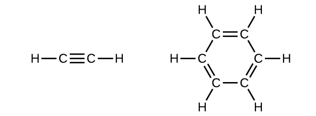
In acetylene, the bonding uses sp hybrids on carbon atoms and s orbitals on hydrogen atoms. In benzene, the carbon atoms are sp2 hybridized.
24. Teflon is prepared by the polymerization of tetrafluoroethylene. Write the equation that describes the polymerization using Lewis symbols.
25. Write two complete, balanced equations for each of the following reactions, one using condensed formulas and one using Lewis structures.
(a) 1 mol of 1-butyne reacts with 2 mol of iodine.
(b) Pentane is burned in air.
Answer
(a) \(\text{CH}\equiv\text{CCH}_{2}\text{CH}_{3}+2\text{I}_{2}\:\longrightarrow\:\text{CHI}_{2}\text{CI}_{2}\text{CH}_{2}\text{CH}_{3}\)
![A reaction is shown. On the left, a four carbon hydrocarbon chain is shown with a triple bond between C atoms 1 and 2 moving left to right across the molecule. The first C is bonded to one H atom. The second C atom bonds with the third C atom. The third C atom is bonded to two H atoms and a fourth C atom. The fourth C atom is bonded to three H atoms. A plus sign is shown followed by 2 I dash I, which is followed by a reaction arrow, then a four C atom hydrocarbon chain with I atoms bonded above and below C atoms 1 and 2 from left to right. The first C atom is bonded to one H. The third C atom is bonded to two H atoms. The fourth C atom is bonded to three H atoms.](img/cnx-chem-20-04-reaction1b-img.webp)
(b) \(\text{CH}_{3}\text{CH}_{2}\text{CH}_{2}\text{CH}_{2}\text{CH}_{3}+8\text{O}_{2}\:\longrightarrow\:5\text{CO}_{2}+\text{6H}_{2}\text{O}\)
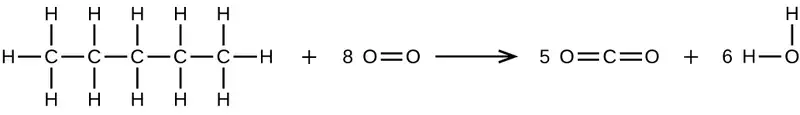
26. Write two complete, balanced equations for each of the following reactions, one using condensed formulas and one using Lewis structures.
(a) 2-butene reacts with chlorine.
(b) benzene burns in air.
27. What mass of 2-bromopropane could be prepared from 25.5 g of propene? Assume a 100% yield of product.
Answer
74.5 g
28. Acetylene is a very weak acid; however, it will react with moist silver(I) oxide and form water and a compound composed of silver and carbon. Addition of a solution of HCl to a 0.2352-g sample of the compound of silver and carbon produced acetylene and 0.2822 g of AgCl.
(a) What is the empirical formula of the compound of silver and carbon?
(b) The production of acetylene on addition of HCl to the compound of silver and carbon suggests that the carbon is present as the acetylide ion, \(\text{C}_{2}{}^{2-}\). Write the formula of the compound showing the acetylide ion.
29. Ethylene can be produced by the pyrolysis of ethane:
\(\text{C}_{2}\text{H}_{6}\:\longrightarrow\:\text{C}_{2}\text{H}_{4}+\text{H}_{2}\)
How many kilograms of ethylene is produced by the pyrolysis of 1.000 \(\times\) 103 kg of ethane, assuming a 100.0% yield?
Answer
9.328 \(\times\) 102 kg
20.2 Alcohols and Ethers¶
30. Why do the compounds hexane, hexanol, and hexene have such similar names?
31. Write condensed formulas and provide IUPAC names for the following compounds:
(a) ethyl alcohol (in beverages)
(b) methyl alcohol (used as a solvent, for example, in shellac)
(c) ethylene glycol (antifreeze)
(d) isopropyl alcohol (used in rubbing alcohol)
(e) glycerine
Answer
(a) ethyl alcohol, ethanol: CH3CH2OH; (b) methyl alcohol, methanol: CH3OH; (c) ethylene glycol, ethanediol: HOCH2CH2OH; (d) isopropyl alcohol, 2-propanol: CH3CH(OH)CH3; (e) glycerine, l,2,3-trihydroxypropane: HOCH2CH(OH)CH2OH
32. Give the complete IUPAC name for each of the following compounds:
(a)
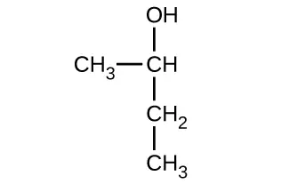
(b)
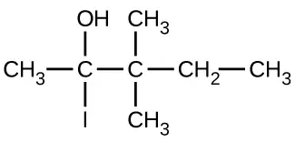
(c)
![This shows a C H subscript 3 group bonded to a C H group. The C atom in the C H group is bonded to an O H group. The C H group is bonded to a C atom. The C atom is bonded below to a C l atom and above to a C H subscript 2 group. The C atom in the C H subscript 2 group is also bonded to a C H subscript 3 group. The C atom is also bonded to a C H subscript 2 group to the right. This C H subscript 2 group is bonded to another C H subscript 2 group. Below this second C H subscript 2 group a C H subscript 3 group is bonded.](img/cnx-chem-20-02-exercise3c-img.webp)
33. Give the complete IUPAC name and the common name for each of the following compounds:
(a)
(b)
(c)
Answer
(a) 1-ethoxybutane, butyl ethyl ether; (b) 1-ethoxypropane, ethyl propyl ether; (c) 1-methoxypropane, methyl propyl ether
34. Write the condensed structures of both isomers with the formula C2H6O. Label the functional group of each isomer.
35. Write the condensed structures of all isomers with the formula C2H6O2. Label the functional group (or groups) of each isomer.
Answer
HOCH2CH2OH, two alcohol groups; CH3OCH2OH, ether and alcohol groups
36. Draw the condensed formulas for each of the following compounds:
(a) dipropyl ether
(b) 2,2-dimethyl-3-hexanol
(c) 2-ethoxybutane
37. MTBE, Methyl tert-butyl ether, CH3OC(CH3)3, is used as an oxygen source in oxygenated gasolines. MTBE is manufactured by reacting 2-methylpropene with methanol.
(a) Using Lewis structures, write the chemical equation representing the reaction.
(b) What volume of methanol, density 0.7915 g/mL, is required to produce exactly 1000 kg of MTBE, assuming a 100% yield?
Answer
(a)
![A reaction is shown. The first molecule is a C atom bonded to another C atom. The first C atom (from left to right) is bonded to two C H subscript 3 groups. The second C atom is bonded to two H atoms. There is a plus sign. The next molecule shows an H atom bonded to an O atom bonded to a C H subscript 3 group. There is an arrow pointing right. This molecule shows a C atom bonded to three C H subscript 3 groups. The C atom is also bonded to an O atom which is also bonded to a C H subscript 3 group.](img/cnx-chem-20-02-mtbe-img.webp)
(b) 4.593 \(\times\) 102 L
38. Write two complete balanced equations for each of the following reactions, one using condensed formulas and one using Lewis structures.
(a) propanol is converted to dipropyl ether
(b) propene is treated with water in dilute acid.
39. Write two complete balanced equations for each of the following reactions, one using condensed formulas and one using Lewis structures.
(a) 2-butene is treated with water in dilute acid
(b) ethanol is dehydrated to yield ethene
Answer
(a) \(\text{CH}_{3}\text{CH}=\text{CHCH}_{3}+\text{H}_{2}\text{O}\:\longrightarrow\:\text{CH}_{3}\text{CH}_{2}\text{CH(OH)CH}_{3}\)
![A reaction is shown. The first molecule shows a C atom bonded with three H atoms. The first C atom is bonded to another C atom. The second C atom is bonded to an H atom and also forms a double bond with a third C atom. The third C atom is bonded to one H atom and fourth C atom. The fourth C atom is bonded to three H atoms. There is a plus sign. The second molecule shows an O atom with two sets of electron dots bonded to two H atoms. There is an arrow pointing right which is labeled, “acid.” The new molecule is a C atom bonded to three H atoms and a second C atom. The second C atom is bonded to two H atoms and a third C atom. The third C atom is bonded to an H atom and an O atom with two sets of electron dots. The O atom is bonded to an H atom. The third C atom is bonded to a fourth C atom which is bonded to three H atoms.](img/cnx-chem-20-04-react2a-img.webp)
(b) \(\text{CH}_{3}\text{CH}_{2}\text{OH}\:\longrightarrow\:\text{CH}_{2}=\text{CH}_{2}+\text{H}_{2}\text{O}\)

20.3 Aldehydes, Ketones, Carboxylic Acids, and Esters¶
40. Order the following molecules from least to most oxidized, based on the marked carbon atom:
![Structure a shows a C H subscript 3 group bonded up and to the right to a C H group which is bonded down and to the left to a C H subscript 3 group. Above the C H group is bonded an O H group. The C in the C H group is red. Structure b shows a C H subscript 3 group bonded up and to the right to a C H subscript 2 group which is bonded down and to the right to a C H subscript 3 group. The C in the C H subscript 2 group is red. Structure c shows a C H subscript 3 group bonded up and to the right to a red C atom. This C atom forms a double bond with an O atom above it. The C atom also forms a bond with a C H subscript 3 group down and to the right.](img/cnx-chem-20-03-oxiorder-img.webp)
41. Predict the products of oxidizing the molecules shown in this problem. In each case, identify the product that will result from the minimal increase in oxidation state for the highlighted carbon atom:
(a)
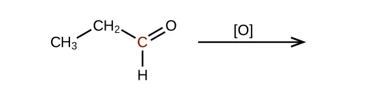
(b)
(c)
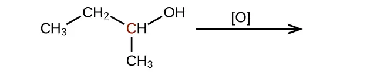
Answer
(a)
(b)
(c)
42. Predict the products of reducing the following molecules. In each case, identify the product that will result from the minimal decrease in oxidation state for the highlighted carbon atom:
(a)
(b)
(c)
43. Explain why it is not possible to prepare a ketone that contains only two carbon atoms.
Answer
A ketone contains a group bonded to two additional carbon atoms; thus, a minimum of three carbon atoms are needed.
44. How does hybridization of the substituted carbon atom change when an alcohol is converted into an aldehyde? An aldehyde to a carboxylic acid?
45. Fatty acids are carboxylic acids that have long hydrocarbon chains attached to a carboxylate group. How does a saturated fatty acid differ from an unsaturated fatty acid? How are they similar?
Answer
Since they are both carboxylic acids, they each contain the –COOH functional group and its characteristics. The difference is the hydrocarbon chain in a saturated fatty acid contains no double or triple bonds, whereas the hydrocarbon chain in an unsaturated fatty acid contains one or more multiple bonds.
46. Write a condensed structural formula, such as CH3CH3, and describe the molecular geometry at each carbon atom.
(a) propene
(b) 1-butanol
(c) ethyl propyl ether
(d) cis-4-bromo-2-heptene
(e) 2,2,3-trimethylhexane
(f) formaldehyde
47. Write a condensed structural formula, such as CH3CH3, and describe the molecular geometry at each carbon atom.
(a) 2-propanol
(b) acetone
(c) dimethyl ether
(d) acetic acid
(e) 3-methyl-1-hexene
Answer
(a) CH3CH(OH)CH3: all carbons are tetrahedral; (b) \(\text{CH}_{3}\text{C}\text{O}\text{CH}_{3}\text{:}\) the end carbons are tetrahedral and the central carbon is trigonal planar; (c) CH3OCH3: all are tetrahedral; (d) CH3COOH: the methyl carbon is tetrahedral and the acid carbon is trigonal planar; (e) CH3CH2CH2CH(CH3)CHCH2: all are tetrahedral except the right-most two carbons, which are trigonal planar
48. The foul odor of rancid butter is caused by butyric acid, CH3CH2CH2CO2H.
(a) Draw the Lewis structure and determine the oxidation number and hybridization for each carbon atom in the molecule.
(b) The esters formed from butyric acid are pleasant-smelling compounds found in fruits and used in perfumes. Draw the Lewis structure for the ester formed from the reaction of butyric acid with 2-propanol.
49. Write the two-resonance structures for the acetate ion.
Answer
![A structure shows in brackets a C atom with H atoms bonded above, below, and to the left, and a C atom bonded to the right. This second C atom has an O atom double bonded above and to the right and a second O atom single bonded below and to the right. Outside the brackets to the right appears a superscript minus sign. This is followed by a double headed arrow. To the right of this arrow in brackets is a C atom with H atoms bonded above, below, and to the left, and a C atom bonded to the right. This second C atom has an O atom single bonded above and to the right and a second O atom double bonded below and to the right. Outside the brackets to the right appears a superscript minus symbol. Double bonded O atoms have two pairs of electron dots and single bonded O atoms have 3 pairs of electron dots.](img/cnx-chem-20-03-acetate-img.webp)
50. Write two complete, balanced equations for each of the following reactions, one using condensed formulas and one using Lewis structures:
(a) ethanol reacts with propionic acid
(b) benzoic acid, C6H5CO2H, is added to a solution of sodium hydroxide
51. Write two complete balanced equations for each of the following reactions, one using condensed formulas and one using Lewis structures.
(a) 1-butanol reacts with acetic acid
(b) propionic acid is poured onto solid calcium carbonate
Answer
(a) \(\text{CH}_{3}\text{CH}_{2}\text{CH}_{2}\text{CH}_{2}{\text{OH}+\text{CH}}_{3}\text{C}(\text{O})\text{OH}\:\:\longrightarrow\:\:\text{CH}_{3}\text{C}(\text{O})\text{OCH}_{2}\text{CH}_{2}\text{CH}_{2}\text{CH}_{3}+\text{H}_{2}\text{O:}\)
![A reaction is shown. The first molecular structure shows a C atom bonded to three H atoms and another C atom. This second C atom is bonded to two H atoms and a third C atom. This third C atom is bonded to two H atoms and a fourth C atom. This C atom is bonded to two H atoms and an O atom. The O atom is bonded to an H atom. The O atom has two pairs of electrons dots. There is a plus sign. The next molecular structure shows a C atom bonded to three H atoms and another C atom. This C atom forms a double bond with an O atom and a single bond with another O atom. The O atom forms a bond with an H atom. Both O atoms have two pairs of electron dots. There is a reaction arrow that points right. The next molecular structure shows a C atom bonded to three H atoms and another C atom. This second C atom forms a double bond with an O atom and a single bond with another O atom. This second O atom is bonded to a C atom which is bonded to two H atoms and another C atom. This C atom is bonded to two H atoms and another C. This C atom is bonded to two H atoms and another C atom. The C atom is bonded to three H atoms. The O atoms have two pairs of electron dots. There is a plus sign. The final molecular structure shows an O atom bonded to two H atoms. The O atom has two pairs of electron dots.](img/cnx-chem-20-04-react2b-img.webp)
(b) \(2\text{CH}_{3}\text{CH}_{2}\text{COOH}+\text{CaCO}_{3}\:\longrightarrow\:{(\text{CH}_{3}\text{CH}_{2}\text{COO})}_{2}\text{Ca}+\text{CO}_{2}+\text{H}_{2}\text{O:}\)
![A reaction is shown. There is a 2 in front of the first molecular structure. This first structure shows a C atom bonded to three H atoms and another C atom. This second C atom is bonded to two H atoms and a third C atom. This third C atom forms a double bond with an O atom and a single bond with another O atom. This second O atom forms a single bond with an H atom. Both O atoms have two pairs of electron dots. There is a plus sign and C a superscript 2 plus sign. Beside the C a superscript 2 plus sign is a set of brackets. Inside the brackets is a central C atom bonded to three O atoms. Two O atoms have three pairs of electron dots, and one O atom has two pairs of electron dots. A 2 minus sign appears as a superscript to the brackets. There is an arrow pointing right. There is a 2 and a set of brackets. Inside the brackets is a C atom bonded to three H atoms and another C atom. This C atom is bonded to two H atoms and a third C atom. This C atom is bonded to two O atoms. One O atom has two pairs of electron dots, and one O atom has three pairs of electron dots. Outside the brackets a minus sign appears as a superscript. C a superscript 2+ also appears beside the brackets. There is a plus sign. The next molecular structure shows a C atom that forms two sets of double bonds with two O atoms. Each O atom has two pairs of electron dots. There is a plus sign. The final molecular structure shows an O atom bonded to two H atoms. The O atom has two pairs of electron dots.](img/cnx-chem-20-04-react2c-img.webp)
52. Yields in organic reactions are sometimes low. What is the percent yield of a process that produces 13.0 g of ethyl acetate from 10.0 g of CH3CO2H?
53. Alcohols A, B, and C all have the composition C4H10O. Molecules of alcohol A contain a branched carbon chain and can be oxidized to an aldehyde; molecules of alcohol B contain a linear carbon chain and can be oxidized to a ketone; and molecules of alcohol C can be oxidized to neither an aldehyde nor a ketone. Write the Lewis structures of these molecules.
Answer
![This figure shows three molecular structures labeled compound A, compound B, and compound C. In A, a C atom is shown bonded the three H atoms and a second C atom. This C atom is bonded to one H atom. Up and to the right it is bonded to another C atom which is bonded to three H atoms. Down and to the left it is bonded to another C atom which is bonded to two H atoms and an O atom. The O atom is bonded to an H atom. The O atom has two pairs of electron dots. In B, a C atom is bonded to three H atoms and another C atom. This second C atom is bonded to an H atom and an O atom. The O atom has two pairs of electron dots and is bonded to an H atom. The second C atom is bonded to third C atom which is bonded to two H atoms. The third C atom is bonded to a fourth C atom which is bonded to three H atoms. In C, a C atom is bonded to three H atoms and another C atom. This C atom is bonded above to another C atom which is bonded to three H atoms, and below to a C atom which is bonded to three H atoms. It is also bonded to an O atom which is bonded to an H atom. The O atom has two pairs of electron dots.](img/cnx-chem-20-03-alcoholabc-img.webp)
20.4 Amines and Amides¶
54. Write the Lewis structures of both isomers with the formula C2H7N.
55. What is the molecular structure about the nitrogen atom in trimethyl amine and in the trimethyl ammonium ion, (CH3)3NH+? What is the hybridization of the nitrogen atom in trimethyl amine and in the trimethyl ammonium ion?
Answer
Trimethyl amine: trigonal pyramidal, sp3; trimethyl ammonium ion: tetrahedral, sp3
56. Write the two resonance structures for the pyridinium ion, C5H5NH+.
57. Draw Lewis structures for pyridine and its conjugate acid, the pyridinium ion, C5H5NH+. What are the hybridizations, electron domain geometries, and molecular geometries about the nitrogen atoms in pyridine and in the pyridinium ion?
Answer
![Two structures are shown, one for pyridine, which is trigonal planar and is labeled s p superscript 2. The second is for the pyridium ion, which is also trigonal planar and is labeled s p superscript 2. Both structures include a hexagonal ring composed of 5 C atoms and 1 N atom which is shown at the top of each structure. In both rings, double bonds alternate and single H atoms extend outward from each C atom. The only structural difference between the two structures involves the unshared electron pair on the N atom in pyridine. This is replaced by a bonded H atom in the pyridium ion which is represented in brackets with a superscript plus symbol outside the brackets.](img/cnx-chem-20-04-pyridinium-img.webp)
58. Write the Lewis structures of all isomers with the formula C3H7ON that contain an amide linkage.
59. Write two complete balanced equations for the following reaction, one using condensed formulas and one using Lewis structures.
Methyl amine is added to a solution of HCl.
Answer
\(\text{CH}_{3}\text{NH}_{2}+\text{H}_{3}\text{O}^{+}\:\longrightarrow\:\text{CH}_{3}\text{NH}_{3}{}^{+}+\text{H}_{2}\text{O}\)
![A reaction is shown. The first structure shown on the left shows a C atom with H atoms bonded above, below, and to the left. To the right, an N atom is bonded which has an unshared pair of electrons above it and H atoms bonded to its right and below. This structure is followed by a plus sign. A structure follows in brackets which includes an O atom with H atoms bonded above, to the left, and below. A single unshared electron pair is shown on the O atom. Outside the brackets is a superscript plus sign. This is followed by a plus sign and C l surrounded by 4 pairs of electron dots and a superscript minus sign. Following a reaction arrow is another structure in brackets. This structure shows a C atom with H atoms bonded above, below, and to the left. To the right, an N atom is bonded which has H atoms bonded above, below, and to the right. Outside the brackets is a superscript plus sign. This is followed by C l surrounded by 4 pairs of electron dots and superscript minus. This is followed by another plus sign and an H atom which forms a single bond to an O atom to which a second H atom is bonded above. The O atom has two sets of electron dots.](img/cnx-chem-20-04-reaction1f-img.webp)
60. Write two complete, balanced equations for each of the following reactions, one using condensed formulas and one using Lewis structures.
Ethylammonium chloride is added to a solution of sodium hydroxide.
61. Identify any carbon atoms that change hybridization and the change in hybridization during the reactions in Exercise 26.
Answer
CH3CH = CHCH3(sp2) + Cl \(\longrightarrow\) CH3CH(Cl)H(Cl)CH3(sp3); 2C6H6(sp2) + 15O2 \(\longrightarrow\) 12CO2(sp) + 6H2O
62. Identify any carbon atoms that change hybridization and the change in hybridization during the reactions in Exercise 39.
63. Identify any carbon atoms that change hybridization and the change in hybridization during the reactions in Exercise 51.
Answer
The carbon in CO32−, initially at sp2, changes hybridization to sp in CO2.
Adapted from Chemistry 2e by OpenStax, licensed under CC BY 4.0. Access the original for free at openstax.org. Changes: converted to the web reading format of The Open Book Project.
-
This is the Beilstein database, now available through the Reaxys site (www.elsevier.com/online-tools/reaxys). ↩
-
Peplow, Mark. “Organic Synthesis: The Robo-Chemist,” Nature 512 (2014): 20–2. ↩
-
Physical properties for C4H10 and heavier molecules are those of the normal isomer, n-butane, n-pentane, etc. ↩
-
STP indicates a temperature of 0 °C and a pressure of 1 atm. ↩
-
The IUPAC adopted new nomenclature guidelines in 2013 that require this number to be placed as an “infix” rather than a prefix. For example, the new name for 2-propanol would be propan-2-ol. Widespread adoption of this new nomenclature will take some time, and students are encouraged to be familiar with both the old and new naming protocols. ↩